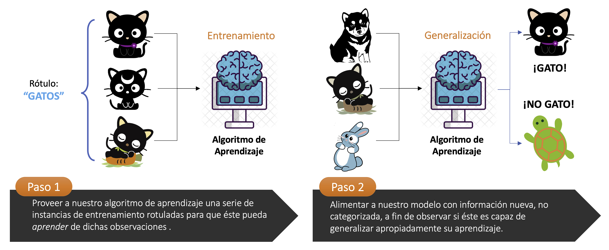
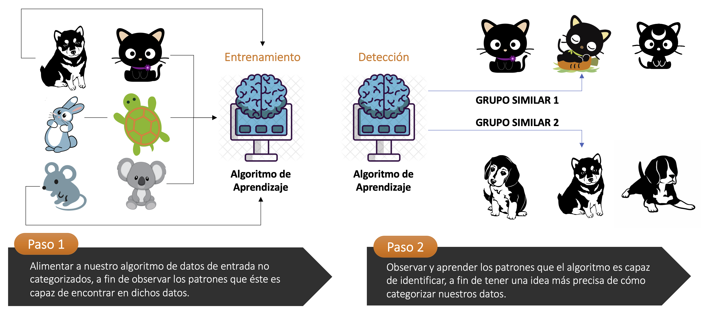
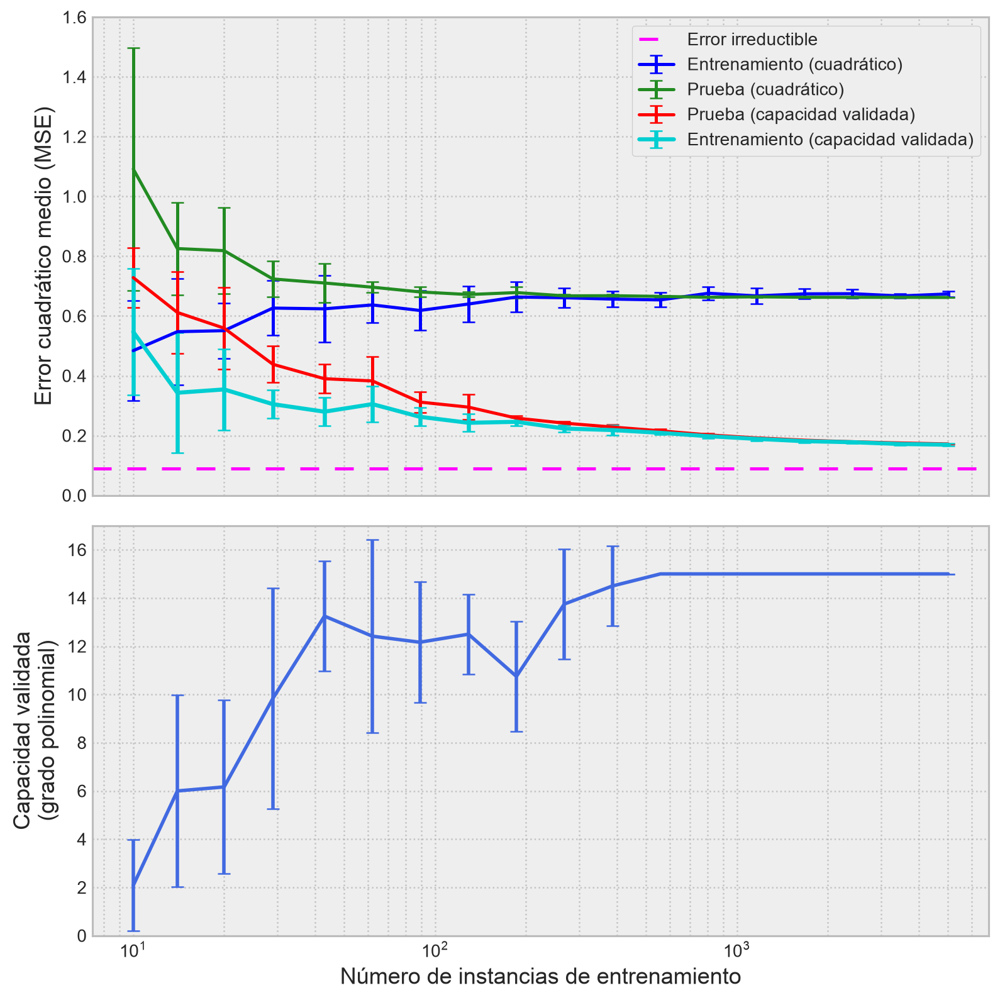

import matplotlib.pyplot as plt
import numpy as np
import seaborn as snsUna introducción sencilla a los algoritmos de aprendizaje
Riesgo empírico, parámetros, modelos probabilísticos y selección inicial de modelos
ImportantIdea central
Antes de estudiar modelos específicos, conviene detenerse en la pregunta más elemental: Qué significa que un algoritmo “aprenda” desde datos. En esta entrada instalaremos una lectura sencilla del aprendizaje automático como un problema de optimización estadística: Definimos una familia de funciones, medimos sus errores mediante una función de pérdida, estimamos parámetros minimizando el riesgo empírico y luego evaluamos si el patrón aprendido parece generalizar más allá de la muestra usada para entrenar.
Algoritmos de aprendizaje Riesgo empírico Función de pérdida Parámetros Modelos probabilísticos Selección de modelos Regularización Estimadores Sesgo Varianza Generalización
1.1 Introducción
El aprendizaje automático suele presentarse desde sus librerías, sus modelos o sus aplicaciones más vistosas. Sin embargo, bajo esa diversidad aparece una estructura común: Tenemos datos observados, una familia de modelos posibles y un criterio para decidir cuál de esos modelos se ajusta mejor a la información disponible. Ese criterio normalmente se expresa como una función de pérdida o como una medida de error que queremos hacer pequeña.
En esta entrada construiremos esa intuición sin entrar todavía en detalles pesados de implementación. La idea será entender por qué entrenar un modelo no es un acto mágico, sino un procedimiento formal para estimar parámetros a partir de datos. También veremos por qué ajustar bien una muestra no garantiza necesariamente aprender bien el fenómeno, y por qué la selección de modelos aparece temprano como una preocupación inevitable.
Este apunte funciona como puente entre la programación numérica, la estadística y los modelos supervisados que estudiaremos después. Al final, deberíamos poder mirar modelos tan distintos como una regresión lineal, una regresión logística o una máquina de soporte vectorial y reconocer una misma pregunta de fondo: Qué función estamos eligiendo, qué error estamos minimizando y qué evidencia tenemos de que esa elección sirve fuera del conjunto de entrenamiento.
1.2 ¿Qué son los algoritmos de aprendizaje?
Un algoritmo de aprendizaje (al cual, con frecuencia, nos referiremos igualmente como algoritmo de machine learning) corresponde a un procedimiento iterativo que puede aprender a partir de un conjunto de datos suministrado previamente. No obstante, la definición del verbo aprender suele ser difusa en este contexto. Tom Mitchell, en su libro de 1997 titulado simplemente Machine Learning, nos provee de la siguiente definición.
Definición 1.1 – Algoritmo de aprendizaje (o algoritmo de machine learning): Decimos que un programa de computadora aprende desde la experiencia \(E\), con respecto a algún conjunto de tareas o problemas \(T\) y una determinada métrica de rendimiento \(P\), si su desempeño en las tareas de \(T\), medido por \(P\), mejora con la experiencia \(E\).
Podemos imaginar una gran cantidad de experiencias \(E\), tareas \(T\) y métricas de rendimiento \(P\). No haremos el esfuerzo de definir formalmente estos conceptos. En su lugar, intentaremos construir una noción más bien intuitiva de estas entidades, apoyándonos por medio de ejemplos sencillos de diferentes tipos de tareas, métricas de rendimiento y experiencias que pueden ser utilizados para la construcción de algoritmos de aprendizaje.
1.2.1 La tarea o problema, \(T\)
Los algoritmos de aprendizaje nos permiten, con frecuencia, tratar problemas que pueden resultar extremadamente difíciles de resolver mediante programas con instrucciones fijas, comúnmente diseñados por seres humanos. Desde un punto de vista tanto científico como filosófico, el aprendizaje automatizado resulta interesante porque el desarrollo de nuestro entendimiento de este tipo de algoritmos nos permite igualmente entender los principios subyacentes a un concepto mucho más general, que corresponde al de inteligencia.
En un nivel de abstracción menos nebuloso, el proceso de aprender no es un sinónimo de la tarea propiamente tal. El aprendizaje es el proceso que nos permite adoptar la habilidad de realizar una tarea. Por ejemplo, si queremos que un robot sea capaz de caminar, entonces caminar es la tarea. Podríamos programar al robot para que aprenda a caminar, o bien, podríamos intentar escribir directamente un programa que describa paso a paso como un robot puede caminar.
Los problemas de machine learning suelen describirse en términos de cómo un sistema de aprendizaje automatizado debiera procesar un ejemplo o instancia. Un ejemplo es una colección de atributos que han sido cuantitativamente medidos a partir de algún evento u objeto que queremos que el sistema de aprendizaje procese. Con frecuencia, solemos representar un ejemplo por medio de un vector \(\mathbf{x}\in \mathbb{R}^{n}\), donde cada elemento \(x_{i}\) (para \(1\leq i\leq n\)) del vector es una medición relativa a un atributo. Por ejemplo, los atributos de una imagen son, usualmente, los pixeles de la misma; en un conjunto de datos con formato rectangular o matricial, los atributos se corresponden con las columnas de la matriz, siendo las filas los ejemplos o instancias.
Es posible resolver varios tipos de problemas mediante el uso de algoritmos de aprendizaje. Algunos ejemplos de estos problemas son los siguientes:
Clasificación: En este tipo de problema, queremos que un programa de computadora especifique a cuál de un conjunto finito de \(k\) categorías pertenece un determinado vector \(\mathbf{x}\in \mathbb{R}^{n}\). Para resolver este problema, se suele pedir a un algoritmo de aprendizaje que produzca una función, digamos \(f:\mathbb{R}^{n} \longrightarrow \left\{ 1,...,k\right\}\), que llamamos modelo. Cuando \(y=f(\mathbf{x})\), el modelo asigna una entrada descrita por el vector \(\mathbf{x}\in \mathbb{R}^{n}\) a una categoría que identificamos por medio de un código numérico que llamamos \(y\). Existen otras variantes de un problema de clasificación, donde \(f\) permite describir la probabilidad de que \(\mathbf{x}\) pertenezca a una determinada clase. Un ejemplo de problema de clasificación corresponde a la determinación de la probabilidad de falla de un talud en una operación minera a cielo abierto, dados ciertos atributos que describen sus parámetros geomecánicos, geométricos y operacionales. Si un vector \(\mathbf{x}\in \mathbb{R}^{n}\) describe un total de \(n\) atributos de interés, y el talud es categorizado en un total de \(k=3\) condiciones diferentes –por ejemplo, \(\mathcal{C}=\left\{ \mathrm{buena},\mathrm{regular} ,\mathrm{mala} \right\}\), las que codificamos mediante los valores \(\left\{ 0,1,2\right\}\)–, entonces queremos que nuestro algoritmo de aprendizaje estime una función de probabilidad \(P(y=c|\mathbf{x})\), con \(c\in\mathcal{C}\), que describa qué tan probable es que el talud se corresponda con una determinada categoría.
Regresión: En este tipo de problema, queremos que un programa de computadora estime (o prediga) un valor numérico continuo a partir de un conjunto de datos de entrada. Para resolver este problema, se suele pedir a un algoritmo de aprendizaje que produzca una función \(f:\mathbb{R}^n\longrightarrow \mathbb{R}\), que llamamos modelo. Se trata de un problema cuya naturaleza es similar al de un problema de clasificación, con el detalle de que el formato de la variable de respuesta es diferente. Un ejemplo de problema de regresión corresponde a la predicción del tamaño de mineral (comúnmente el \(P_{80}\) con respecto a una referencia de malla Tyler) que se obtiene en una planta de molienda, a partir de datos operacionales y contextuales. En este caso, la variable de respuesta, que llamamos \(y\), es continua (o, al menos, seccionalmente continua) en un intervalo (a veces desconocido) en \(\mathbb{R}\).
Detección de anomalías: En este tipo de problema, queremos que un programa de computadora examine cuidadosamente un conjunto de eventos u objetos (representados, naturalmente, por datos), y califique algunos de ellos como atípicos o inusuales. Un ejemplo de problema de este tipo corresponde a la detección de eventos sísmicos de gran magnitud de momento en una operación minera subterránea sometida a campos tensionales de enorme magnitud. Tales eventos sísmicos son completamente inusuales, y suelen ser inducidos por anomalías operacionales en la forma en la cual hacemos minería. En términos probabilísticos, solemos decir que tales eventos se muestrean a partir de una distribución de probabilidad distinta a la que gobierna los eventos sísmicos más comunes (y que pueden ocurrir de a cientos de miles cada año).
Estimación de funciones de densidad: En este tipo de problema, queremos que un programa de computadora aprenda una función \(f_{\mathrm{modelo}}:\mathbb{R}^{n}\longrightarrow \mathbb{R}\), donde \(f_{\mathrm{modelo}}(\mathbf{x})\) puede interpretarse como una función de densidad conjunta de probabilidad (si \(\mathbf{x}\) es una variable continua) o una función de masa conjunta de probabilidad (si \(\mathbf{x}\) es una variable discreta), en ambos casos definida sobre un espacio muestral desde donde se han extraído las instancias del problema. Para lograr resolver este problema con éxito (y especificaremos qué significa el éxito al hablar acerca de la métrica de desempeño \(P\)), el correspondiente algoritmo de aprendizaje requiere aprender la estructura de la data que ha visto. Debe reconocer donde las instancias se agrupan de forma más apretada (formando lo que, en estadística, se denomina cluster), y donde aquello es menos probable que ocurra. La mayoría de estos sub-problemas requieren que el algoritmo de aprendizaje capture (al menos de forma implícita) la estructura de la correspondiente distribución de probabilidad.
Por supuesto, pueden definirse más problemas o tareas. Las que hemos listado simplemente tienen el objetivo de proveer de ejemplos un tanto más tangibles para así construir una noción intuitiva de lo que significa un problema o tarea en el contexto de los algoritmos de aprendizaje.
1.2.2 La métrica de desempeño, \(P\)
A fin de evaluar las habilidades de un algoritmo de aprendizaje, debemos diseñar una métrica cuantitativa de su desempeño. Usualmente, dicha métrica \(P\) es específica con respecto al problema o tarea \(T\) que se desea resolver.
Consideremos un problema de clasificación. En una tarea como ésta, con frecuencia, solemos medir la exactitud del modelo resultante. La exactitud se define como la proporción de instancias para las cuales nuestro modelo produce un resultado correcto (el mismo que el real). También podemos obtener información equivalente por medio de la medición de la tasa de error, que es la proporción de instancias para las cuales nuestro modelo produce un resultado incorrecto. Para problemas tales como la regresión, la medición de cantidades tales como la exactitud o la tasa de error no tiene sentido, porque las variables de salida son continuas y, por definición, matemáticamente la probabilidad de que un modelo (sin ningún tipo de fuga de datos –o data leakage–) le atine exactamente al valor real es igual a cero, de la misma forma que la probabilidad de que un dardo caiga exactamente en las coordenadas \((x,y)\) de un blanco es también cero, porque existen infinitos de estos puntos. En un contexto como éste, estamos interesados en diseñar métricas de desempeño basadas en la distancia existente entre un valor estimado por el modelo (digamos \(\hat{y}_{\mathrm{pred}}\)) y el correspondiente valor real (\(y_{\mathrm{real}}\)). Por ejemplo, el error cuadrático medio es una métrica apta de desempeño para los modelos de regresión, ya que permite obtener el promedio de las diferencias (distancias) al cuadrado entre \(\hat{y}_{\mathrm{pred}}\) e \(y_{\mathrm{real}}\). Es decir,
\[ P=\frac{1}{m} \sum^{m}_{i=1} \left( \hat{y}_{i} -y_{i}\right)^{2} \tag{1.1} \]
Usualmente, estamos interesados en qué tan bien se desempeña un algoritmo de machine learning sobre un conjunto de datos que no ha visto previamente, dado que aquello nos dará una idea (aproximada) en relación a cómo dicho algoritmo va a trabajar cuando se despliegue en el mundo real. Por lo tanto, las métricas de desempeño suelen evaluarse sobre un conjunto de datos de prueba, que se separa en primera instancia del conjunto de datos que se utiliza para que nuestro algoritmo aprenda a partir de ellos, y que suele llamarse conjunto de entrenamiento.
La elección de la métrica de desempeño \(P\) puede parecer directa y objetiva, pero con frecuencia resulta difícil escoger una métrica que se corresponda exactamente con el comportamiento que queremos que el sistema de interés –basado en el algoritmo de aprendizaje– tenga en el futuro. En algunos casos, esto se debe a que a veces es complicado decidir qué deberíamos medir. Por ejemplo, cuando resolvemos un problema de regresión, una pregunta que cae de cajón es la siguiente: ¿Deberíamos penalizar más el sistema si éste frecuentemente comete errores cuya magnitud no sea muy significativa, o si rara vez comete errores de magnitud muy significativa? Estas decisiones, naturalmente, dependen de la aplicación del sistema que queremos diseñar.
1.2.3 La experiencia, \(E\)
Los algoritmos de machine learning pueden ser categorizados, en términos legos, como algoritmos de aprendizaje supervisado y no supervisado, en términos del tipo de experiencia que permitimos que éstos tengan durante su correspondiente proceso de aprendizaje.
La mayoría de los algoritmos de aprendizaje que trataremos en estos apuntes serán tales que permitiremos que éstos aprendan a partir de un conjunto de datos o dataset. Un dataset es una colección de muchas instancias, que suelen denominarse como datos puntuales (del inglés, data points). Un ejemplo de dataset muy utilizado por profesores y alumnos desde hace mucho tiempo (y subrayamos muy utilizado, porque es muy común verlo en infinidad de cursos online de ciencia de datos o machine learning, e incluso en la documentación de varias librerías o frameworks dedicadas a la implementación de estas materias a nivel computacional) corresponde al dataset IRIS, desarrollado por el matemático inglés Ronald Fisher y presentado en 1936, que contiene 50 muestras de cada una de tres especies de flores del género Iris (Iris setosa, Iris virginica e Iris versicolor). Para cada flor se especifican cuatro rasgos: El largo y ancho del sépalo y pétalo, en centímetros. De esta manera, cada muestra de flor en este dataset representa una instancia que comunica las mediciones relativas a los rasgos previamente señalados.
Como IRIS, existen muchos datasets famosos que han sido masivamente utilizados para explicar (y aprender) todo tipo de algoritmos y modelos. Cuando comencemos a estudiar las implementaciones de algoritmos de aprendizaje en Python provistas por la librería Scikit-Learn, dedicaremos un tiempo a revisar el módulo sklearn.datasets, que nos proveerá de muchos datasets con los que podremos probar nuestras implementaciones de machine learning. Estos datasets tienen, en general, la característica general de ser bien comportados. Es decir, tienen una estructura particularmente fácil de aprender por ciertos tipos de algoritmos, no tienen filas (instancias) con registros vacíos (NA o NaN, como aprendimos al estudiar el detalle algunas implementaciones de la librería Pandas, o null, como ocurre en Polars) u otras anomalías típicas que encontraríamos en datasets propios del mundo real. Por esa razón, muchos profesionales y académicos suelen referirse a estos datasets como toysets (a veces, cariñosamente, a veces, quizás despectivamente). Son perfectos para dar los primeros pasos a la hora de aprender a diseñar sistemas basados en algoritmos de aprendizaje, y como benchmark a la hora de diseñar nuevos algoritmos. Pero no son, en absoluto, buenos representantes de los datasets que nos encontraremos en el mundo real, donde seguramente nos gastaremos la mayor parte de nuestro tiempo en trabajarlos a fin de llegar al formato estructurado que la mayoría de los algoritmos de aprendizaje requerirán en un principio (y en el que ya nos adentraremos más adelante).
Pasado el paréntesis anterior relativo a los datasets, es bueno que profundicemos un poco más en la diferencia entre los algoritmos de aprendizaje supervisado y los no supervisados. En efecto,
a) Los algoritmos de aprendizaje no supervisado experimentan un dataset que contiene muchos atributos. De esta manera, pueden aprender algunas propiedades de interés relativas a la estructura de dicho dataset. Por ejemplo, la distribución de probabilidad que ha generado el dataset completo, o bien, ciertas similitudes entre subconjuntos propios del dataset que guardan relación con su propia estructura, lo que se denomina en la práctica como agrupamiento o clustering.

b) Los algoritmos de aprendizaje supervisado experimentan un dataset que también contiene atributos, pero cada instancia tiene asociada una etiqueta o valor objetivo. Por ejemplo, en el caso del dataset IRIS, tal valor objetivo corresponde a la subespecie de flor Iris que está asociada a cada instancia (caracterizada por el largo y ancho de pétalos y sépalos de cada flor). De esta manera, un algoritmo de aprendizaje supervisado puede clasificar cada flor en una subespecie de Iris determinada, basado en los atributos relativos a cada una.

En términos simples, el aprendizaje no supervisado involucra la observación de varias instancias de un vector aleatorio \(\mathbf{X}\), a fin de aprender (ya sea implícita o explícitamente) la distribución de probabilidad inherente a \(\mathbf{X}\) a partir de un conjunto de muestras \(\mathbf{x}\in \mathrm{Rec}(\mathbf{X})\), o bien, algunas propiedades de interés para dicha distribución. Por otro lado, el aprendizaje supervisado involucra la observación de varias instancias de un vector aleatorio \(\mathbf{X}\), junto con un valor asociado (o vector) \(\mathbf{y}\), a fin de predecir el valor de \(\mathbf{y}\) en términos de \(\mathbf{x}\in \mathrm{Rec}(\mathbf{X})\), usualmente por medio de la estimación de la probabilidad condicional \(P(\mathbf{y}|\mathbf{x})\). El término “aprendizaje supervisado” se origina a partir de la consideración de \(\mathbf{y}\) como una suerte de instructor o profesor, el cual le muestra a un hipotético sistema basado en algoritmos de machine learning qué tiene que aprender. En el caso del aprendizaje no supervisado, no existe un instructor y, por tanto, el algoritmo de aprendizaje debe aprender por sí mismo alguna característica del dataset sin esta guía.
Algunos algoritmos de machine learning no experimentan un dataset fijo. Por ejemplo, los algoritmos de aprendizaje por reforzamiento interactúan con un entorno, de tal forma que existe un bucle de retroalimentación entre el sistema y sus experiencias. Tales algoritmos están fuera del alcance de estos apuntes, pero existen alternativas muy buenas para su aprendizaje, como el maravilloso libro Reinforcement Learning, an Introduction (Barto, A. & Sutton, R., 2018).
1.3 Minimización de riesgo empírico
A partir de este momento, vamos a asumir siempre que cualquier conjunto de datos puede ser leído por medio de un computador, y representado adecuadamente en un tipo de dato numérico con un formato estructurado de tipo tabular. En general, aprenderemos la mayoría de los conceptos de interés propios de los algoritmos de machine learning haciendo uso de toysets, para luego construir casos de estudio más interesantes a partir de datasets más parecidos a lo que solemos encontrar en el mundo real, a fin de poner en práctica algunos temas relativos a la limpieza y procesamiento de datos.
Ya con todo lo repasado en matemáticas en la sección de apuntes, y con la (quizás no tan breve) introducción que hemos desarrollado en las líneas anteriores, estamos en posición de definir rigurosamente lo que significa “aprender”. Este verbo, para el caso de los algoritmos de machine learning, suele estribar en la estimación de parámetros con base en un conjunto de datos de entrenamiento.
En esta primera parte, consideraremos el caso para el cual un predictor es una función matemática, y dejaremos para después el caso en el que el mismo predictor será considerado un modelo probabilístico. Describiremos una idea conocida como minimización del riesgo empírico, la que se popularizó a principios de la década de 1990 con la publicación de las máquinas de soporte vectorial (support vector machines o SVMs) por los laboratorios de AT&T, aunque es perfectamente aplicable en un contexto más general. Los principios derivados de la minimización del riesgo empírico nos permiten responder la pregunta fundamental sobre “¿qué es aprender?”, sin tener que construir explícitamente modelos probabilísticos. El diseño de un algoritmo de aprendizaje, conforme esta idea, tiene cuatro bases esenciales:
- ¿Cuál es el conjunto de funciones permisibles que pueden ser usadas para representar a un predictor?
- ¿Cómo medimos qué tan bien se desempeña el predictor en el conjunto de entrenamiento?
- ¿Cómo construimos predictores únicamente a partir de datos de entrenamiento que desempeñen, ojalá, igual de bien en datos de prueba que no fueron vistos por el predictor durante su construcción?
- ¿Cuál es el procedimiento de búsqueda en el espacio completo de posibles modelos que nos permitirá escoger el mejor de todos ellos?
1.3.1 Funciones permisibles como hipótesis
Supongamos que disponemos de un total de \(m\) instancias de datos en un conjunto de entrenamiento, cada una de las cuales es representada por un vector \(\mathbf{x}_{i}\in \mathbb{R}^{n}\), con \(1\leq i\leq m\), donde \(n\) es el número de variables que caracterizan a dicho conjunto de entrenamiento. Para cada \(\mathbf{x}_{i}\), hacemos corresponder una etiqueta o valor objetivo \(y_{i}\in \mathbb{R}\). Queremos estimar un predictor, que llamaremos \(f\left( \cdot \ |\ \mathbf{w } \right) :\mathcal{D} \subseteq \mathbb{R}^{n} \longrightarrow \mathbb{R}\) (donde \(\mathcal{D}\) es el conjunto de entrenamiento), siendo \(\mathbf{w }\) un conjunto de parámetros (razón por la cual diremos que \(f\) está parametrizada por \(\mathbf{w }\)). Esperamos encontrar un valor lo suficientemente bueno de \(\mathbf{w }\), que llamaremos \(\mathbf{w }^{\ast}\), tal que
\[ \ y_{i}\approx f\left( \mathbf{x}_{i} |\mathbf{w }^{\ast } \right) \ ;\ \forall i=1,...,m \tag{1.2} \]
Como hicimos antes, usaremos la notación \(\hat{y}_{i}=f\left( \mathbf{x}_{i} |\mathbf{w }^{\ast } \right)\) para representar la salida de un predictor.
Ejemplo 1.1 – Regresión por mínimos cuadrados: En la entrada dedicada a la aplicación de Numpy a la construcción de modelos de regresión y clasificación, introducimos el modelo de regresión lineal por medio de un enfoque iterativo, haciendo uso del algoritmo de gradiente descendente. En un contexto general, si disponemos de un conjunto de \(m\) pares \((\mathbf{x}_{i},y_{i})\) (\(1\leq i\leq m\)), dicho modelo se construye en base a una combinación lineal de los valores de \(\mathbf{x}_{i}\in \mathbb{R}^{n}\) y una colección de \(n+1\) parámetros \(\mathbf{w}=(w_{0},...,w_{n})^{\top}\). Solemos anexar un valor \(x_{0}=1\) al vector \(\mathbf{x}_{i}\) para todo \(i=1,...,m\), a fin de empatar las dimensiones de \(\mathbf{x}\) y \(\mathbf{w}\). Por lo tanto, el predictor en este caso se escribe como
\[ f\left( \mathbf{x}_{i} |\mathbf{w } \right) =\mathbf{w }^{\top } \mathbf{x}_{i} \ ;\ \forall i=1,...,m \tag{1.3} \]
Tal predictor puede escribirse equivalentemente como
\[ f\left( \mathbf{x}_{i} |\mathbf{w } \right) =w_{0} +\sum^{n}_{j=1} w_{j} x_{ij}\ ;\ \forall i=1,...,m \tag{1.4} \]
De esta manera, el predictor toma el vector de variables independientes representado por una única instancia \(\mathbf{x}_{i}\) como entrada, produciendo un valor de salida real. Por lo tanto, se tiene que \(f:\mathbb{R}^{n+1}\longrightarrow \mathbb{R}\). Esta técnica para estimar \(\mathbf{w }\) recibe el nombre de estimación por mínimos cuadrados. ◼︎
Cualquier función del tipo (1.2) puede hacer la labor de predictor. Naturalmente, el caso de una transformación afín como predictor mostrado en el ejemplo (1.1) es simplemente un caso muy particular de un universo mucho más grande de posibles predictores. Más adelante veremos algunos de ellos con mayor detalle.
1.3.2 Función de pérdida
Consideremos el valor objetivo \(y_{i}\) para una instancia particular, y la predicción \(\hat{y}_{i}\) que obtenemos (hipotéticamente) a partir del correspondiente vector \(\mathbf{x}_{i}\). Para definir qué significa un ajuste lo suficientemente bueno, necesitamos especificar una función de pérdida \(\ell(y_{i},\hat{y}_{i})\) que toma el valor real al que deseamos llegar (o ground truth, como suele llamarse en inglés) y la predicción que hemos realizado. Esta función de pérdida produce un valor no negativo, que llamaremos costo, pérdida o error, y que representa cuánto error cometemos en esta predicción particular. De esta manera, ahora afinaremos nuestro objetivo: Queremos encontrar un valor \(\mathbf{w }^{\ast}\) que minimice el valor medio del error en el conjunto completo de datos de entrenamiento.
Sea pues \(\mathcal{D} =\left\{ \left( \mathbf{X} ,\mathbf{y} \right) :\mathbf{X} =\left\{ x_{ij}\right\} \in \mathbb{R}^{m\times n} \wedge \mathbf{y} \in \mathbb{R}^{m} \right\}\) un conjunto de datos de interés, a partir de los cuales, posiblemente, queramos construir algún modelo basándonos en un determinado algoritmo de aprendizaje. Un supuesto que solemos asumir con frecuencia en muchos problemas de este tipo es que el conjunto \(\mathcal{D}\) está compuesto, para cada instancia \(i\), por pares \((\mathbf{x}_{i},y_{i})\) que son independientes e idénticamente distribuidos. Como vimos en la entrada dedicada a la creación de modelos con Numpy, la palabra independiente implica que cada par de puntos \((\mathbf{x}_{p},y_{p})\) y \((\mathbf{x}_{q},y_{q})\) (\(p\leq m\wedge q\leq m\wedge p\neq q\)) no dependen, estadísticamente hablando, el uno del otro. La condición de estar idénticamente distribuidos, por otro lado, apunta a que todas las observaciones provienen de una misma distribución generadora. Cuando ambas condiciones son razonables y la muestra es representativa, una media empírica calculada sobre datos observados puede utilizarse como aproximación de una cantidad poblacional o esperada. Naturalmente, este razonamiento es la base para usar el valor medio de la función de costo sobre el conjunto de entrenamiento como una aproximación del error que el modelo tendría bajo la distribución desde la cual fueron muestreados los datos.
Si ponemos \(\mathbf{X} :=\left( \mathbf{x}_{1} ,...,\mathbf{x}_{m} \right)^{\top } \wedge \mathbf{y} =\left( y_{1},...,y_{m}\right)^{\top }\), podemos escribir el valor medio de la función de costo como
\[ \mathbf{R}_{\mathrm{emp} } \left( f\ |\ \mathbf{X} ,\mathbf{y} \right) =\frac{1}{m} \sum^{m}_{i=1} \ell \left( y_{i},\hat{y}_{i} \right) \tag{1.5} \]
donde \(f\) es la hipótesis bajo la cual se construye el predictor, y por lo cual, \(\hat{y}_{i} =f\left( \mathbf{x}_{i} ,\mathbf{w } \right)\). La ecuación (1.5) es llamada riesgo empírico asociado a nuestra hipótesis \(f\), con respecto a la función de costo \(\ell\). Depende, además de la hipótesis \(f\), de los valores de \(\mathbf{X}\) e \(\mathbf{y}\). Consecuentemente, la estrategia descrita previamente se conoce como minimización del riesgo empírico.
Ejemplo 1.2 – Función de costo en una estimación por mínimos cuadrados: Continuemos con el ejemplo (1.1), donde presentamos la hipótesis inherente a la estimación por mínimos cuadrados en un problema de regresión lineal. Como habíamos comentado previamente, en un problema de este tipo, estamos interesados en ajustar una función del tipo \(y_{i}\approx f\left( \mathbf{x}_{i} |\mathbf{w }^{\ast } \right)=w_{0} +\sum^{n}_{j=1} w_{j} x_{ij}\), para todo \(i=1,...,m\).
El proceso de ajuste por mínimos cuadrados lleva su nombre porque dicho proceso tiene su base en el uso de una función de costo que mide las diferencias al cuadrado entre los valores reales de \(y_{i}\) y los valores estimados por el predictor, \(\hat{y}_{i}\). Matemáticamente, escribimos esto como \(\ell \left( y_{i},\hat{y}_{i} \right) =\left( y_{i}-\hat{y}_{i} \right)^{2}\). Si definimos el riesgo empírico asociado a este modelo, entonces es evidente que deseamos determinar los valores de \(\mathbf{w}\) que minimizan la expresión
\[ \mathbf{R}_{\mathrm{emp} } \left( f\ |\ \mathbf{X} ,\mathbf{y} \right) =\frac{1}{m} \sum^{m}_{i=1} \left( y_{i}-f\left( \mathbf{x}_{i} ,\mathbf{w } \right) \right)^{2} \tag{1.6} \]
Si reemplazamos \(f\left( \mathbf{x}_{i} |\mathbf{w }^{\ast } \right)=w_{0} +\sum^{n}_{j=1} w_{j} x_{ij}\) en la ecuación (1.6), llegamos al siguiente problema de optimización:
\[ \min_{\mathbf{w } \in \mathbb{R}^{n+1} } \mathbf{R}_{\mathrm{emp} } \left( f\ |\ \mathbf{X} ,\mathbf{y} \right) =\frac{1}{m} \sum^{m}_{i=1} \left( y_{i}-\mathbf{w }^{\top } \mathbf{x}_{i} \right)^{2} \tag{1.7} \]
el cual puede ser escrito de manera más elegante adoptando la notación matricial,
\[ \min_{\mathbf{w } \in \mathbb{R}^{n+1} } \mathbf{R}_{\mathrm{emp} } \left( f\ |\ \mathbf{X} ,\mathbf{y} \right) =\frac{1}{m} \left\Vert \mathbf{y} -\mathbf{X} \mathbf{w } \right\Vert^{2} \tag{1.8} \]
El problema anterior se conoce como problema de mínimos cuadrados y, bajo ciertas condiciones sobre la matriz \(\mathbf{X}\), presenta una solución analíticamente cerrada (es decir, expresable por medio de una fórmula). Esto no impide que también pueda resolverse mediante procedimientos numéricos, como el gradiente descendente, pero sí explica por qué la regresión lineal suele ser uno de los primeros modelos que se estudian en aprendizaje supervisado. Dicha solución será discutida en detalle más adelante. ◼︎
Naturalmente, no estamos interesados en un predictor que únicamente se desempeñe bien sobre los datos de entrenamiento. En vez de ello, buscamos un predictor que se desempeñe de manera razonable (es decir, cuyo riesgo sea bajo) sobre datos que el predictor no haya visto durante su proceso de entrenamiento, y que es lo que llamamos datos de prueba. De manera más formal, estamos interesados en encontrar un predictor \(f\) (con parámetros fijos) que minimice el riesgo esperado, definido como
\[ \mathbf{R}_{\mathrm{real} } \left( f\right) =\mathrm{E}_{\mathbf{x} ,y} \left[ \ell \left( y,f\left( \mathbf{x} \right) \right) \right] \tag{1.9} \]
La expresión anterior es atractiva, pero tiene un problema práctico enorme: En general, no conocemos la distribución conjunta que genera los pares \((\mathbf{x},y)\). Si la conociéramos, podríamos evaluar directamente la esperanza anterior y escoger el predictor que minimiza el riesgo real. Pero, justamente, el punto de construir modelos de machine learning es que no conocemos completamente esa distribución generadora. Sólo disponemos de una muestra finita, usualmente ruidosa, incompleta y limitada, a partir de la cual intentamos aproximar una regla de predicción.
Por esta razón, en la práctica reemplazamos el riesgo real por cantidades empíricas calculadas sobre datos observados. Durante el entrenamiento usamos el conjunto de entrenamiento para escoger los parámetros del predictor, minimizando una cantidad como la expresada en la ecuación (1.5). Sin embargo, si luego evaluamos el desempeño del modelo usando exactamente los mismos datos que se utilizaron para estimar sus parámetros, obtendremos una medición optimista de su capacidad predictiva. Esto ocurre porque el modelo ya fue ajustado para desempeñarse bien en esos datos particulares.
El conjunto de prueba aparece para enfrentar este problema. La idea es separar, antes de entrenar, una porción de los datos disponibles y mantenerla completamente fuera del procedimiento de ajuste. Si denotamos este conjunto por \(\mathcal{D}_{\mathrm{test}}\), con \(m_{\mathrm{test}}\) instancias, podemos estimar el desempeño fuera de muestra mediante
\[ \mathbf{R}_{\mathrm{test} } \left( f\ |\ \mathcal{D}_{\mathrm{test} } \right) =\frac{1}{m_{\mathrm{test} }}\sum^{m_{\mathrm{test} }}_{i=1} \ell\left(y^{\mathrm{test} }_{i}, f\left(\mathbf{x}^{\mathrm{test} }_{i}\right)\right) \tag{1.10} \]
donde \(\left(\mathbf{x}^{\mathrm{test} }_{i},y^{\mathrm{test} }_{i}\right)\) corresponde a la \(i\)-ésima instancia del conjunto de prueba. Esta cantidad no es igual al riesgo real, porque sigue siendo una estimación empírica basada en una muestra finita. No obstante, si el conjunto de prueba fue separado correctamente y proviene de la misma distribución que esperamos encontrar durante el despliegue del modelo, entonces \(\mathbf{R}_{\mathrm{test}}\) funciona como una aproximación razonable del desempeño que tendrá el predictor en datos no vistos.
La separación entre entrenamiento y prueba nos permite distinguir dos preguntas que, aunque relacionadas, no son equivalentes:
- ¿Qué tan bien ajusta el predictor los datos usados para entrenarlo? Esta pregunta se responde mediante el riesgo empírico de entrenamiento.
- ¿Qué tan bien parece comportarse el predictor frente a datos que no participaron en su ajuste? Esta pregunta se responde, de manera aproximada, mediante el riesgo de prueba.
Cuando el riesgo de entrenamiento es bajo, pero el riesgo de prueba es alto, decimos que el modelo probablemente está sobreajustando los datos de entrenamiento. En otras palabras, el predictor aprendió regularidades demasiado específicas de la muestra utilizada para construirlo, en vez de capturar patrones que se mantengan de forma estable en nuevos datos. Por el contrario, cuando tanto el riesgo de entrenamiento como el riesgo de prueba son altos, es posible que el modelo esté subajustando, es decir, que su familia de funciones permisibles no tenga suficiente flexibilidad para representar adecuadamente la relación entre \(\mathbf{x}\) e \(y\).
Esta diferencia entre ajuste y generalización será una de las ideas centrales de todo el curso. Un algoritmo de aprendizaje no es valioso simplemente porque minimiza una función de pérdida sobre datos conocidos. Lo es porque, bajo supuestos razonables, logra construir un predictor que se comporta de manera estable frente a observaciones futuras. Por eso, cada vez que entrenemos un modelo, deberemos preguntarnos no sólo cuánto error comete en el conjunto de entrenamiento, sino también qué evidencia tenemos de que ese error representa algo más que memoria sobre una muestra particular.
1.3.3 La inevitable advertencia…
Conviene cerrar esta sección con una advertencia. El conjunto de prueba no debería ser usado para tomar decisiones repetidas sobre el modelo, como escoger hiperparámetros, comparar muchas familias de predictores o decidir transformaciones de variables. Si usamos el conjunto de prueba una y otra vez para guiar nuestras decisiones, terminamos incorporando información de ese conjunto al proceso de modelamiento. En tal caso, deja de ser una medición honesta del desempeño fuera de muestra.
Por esta razón, en flujos de trabajo más cuidadosos se distingue entre conjunto de entrenamiento, conjunto de validación y conjunto de prueba. El conjunto de entrenamiento se usa para estimar parámetros; el conjunto de validación se usa para comparar alternativas y seleccionar modelos; y el conjunto de prueba se reserva para una evaluación final. Más adelante formalizaremos esta separación con mayor detalle, especialmente cuando estudiemos validación cruzada, selección de modelos e hiperparámetros.
1.3.4 Teoremas “no free lunch”
La discusión anterior nos lleva naturalmente a una pregunta incómoda: Si podemos comparar modelos sobre datos de validación y prueba… ¿Existe entonces un algoritmo de aprendizaje que sea, en términos generales, el mejor de todos? Dicho de otra manera… ¿Hay algún método que debamos preferir siempre, independiente del problema, de los datos y de la distribución que los genera?
Los llamados teoremas “no free lunch” responden negativamente a esta pregunta. En una versión intuitiva, estos resultados establecen que, si promediamos el desempeño de todos los algoritmos posibles sobre todos los problemas posibles, ningún algoritmo supera sistemáticamente a los demás. La ventaja de un algoritmo en una familia de problemas debe compensarse con una desventaja en otra familia de problemas. No existe, por tanto, una receta universal que sea óptima para cualquier estructura de datos imaginable.
La frase “no free lunch” puede leerse literalmente: No hay almuerzo gratis. Un algoritmo funciona bien porque incorpora algún tipo de supuesto, preferencia o sesgo inductivo sobre la forma del problema que estamos intentando resolver. Una regresión lineal supone que una relación afín puede ser razonable; un árbol de decisión supone que el espacio puede particionarse mediante reglas; una máquina de soporte vectorial busca una frontera de separación con cierto margen; una red neuronal profunda apuesta por composiciones flexibles de transformaciones no lineales. Cada una de estas elecciones puede ser excelente si calza con la estructura del problema, pero puede ser mediocre si la estructura real es distinta.
Esto no significa que todos los algoritmos sean igualmente útiles en la práctica. Sería una conclusión demasiado pobre. Lo que los teoremas “no free lunch” nos recuerdan es que el éxito de un algoritmo depende de la correspondencia entre sus supuestos y el fenómeno que estamos modelando. Por eso la selección de modelos no es un trámite decorativo, sino una parte central del aprendizaje automático: Debemos escoger una clase de modelos cuya capacidad sea compatible con la cantidad de datos disponible, el nivel de ruido, el tipo de variable objetivo y la geometría del problema.
Esta idea también explica por qué no debemos enamorarnos demasiado rápido de un algoritmo. En un problema pequeño, un modelo simple puede generalizar mejor que un modelo flexible, porque tiene menos grados de libertad para perseguir ruido. En un problema grande y estructuralmente complejo, un modelo demasiado simple puede quedarse corto, incluso si es estable. A medida que aumenta la cantidad de datos, puede volverse razonable usar modelos de mayor capacidad, porque disponemos de más evidencia para estimar sus parámetros sin caer necesariamente en sobreajuste.
1.3.5 Regularización como control de capacidad
Una forma práctica de conectar la minimización del riesgo empírico con los teoremas “no free lunch” es introducir la idea de regularización. En términos simples, regularizar consiste en modificar el problema de entrenamiento para que el modelo no sólo busque ajustar bien los datos observados, sino que también prefiera soluciones consideradas más simples, estables o plausibles bajo algún criterio previo.
La forma más común de escribir esta idea es agregar un término de penalización al riesgo empírico. Si \(\Omega(f)\) mide la complejidad de la hipótesis o \(\Omega(\mathbf{w})\) mide la magnitud de sus parámetros, entonces el entrenamiento regularizado puede expresarse como
\[ \min_{f\in\mathcal{H}} \left[ \mathbf{R}_{\mathrm{emp}}\left(f\ |\ \mathbf{X},\mathbf{y}\right) +\lambda \Omega(f) \right] \tag{1.11} \]
o, cuando trabajamos con modelos parametrizados por \(\mathbf{w}\),
\[ \min_{\mathbf{w}\in\mathcal{W}} \left[ \frac{1}{m}\sum^{m}_{i=1}\ell\left(y_i,f(\mathbf{x}_i|\mathbf{w})\right) +\lambda \Omega(\mathbf{w}) \right] \tag{1.12} \]
El parámetro \(\lambda\geq 0\) controla la intensidad de la regularización. Si \(\lambda=0\), volvemos al problema original de minimización del riesgo empírico. Si \(\lambda\) aumenta, el entrenamiento comienza a castigar con más fuerza las soluciones complejas. En ese sentido, \(\lambda\) funciona como un hiperparámetro: no se estima directamente como parte de los parámetros del modelo, sino que suele escogerse mediante validación o validación cruzada.
En modelos lineales, las penalizaciones más típicas se definen sobre el vector de parámetros. Dos casos particularmente importantes son la regularización \(\ell_2\) y la regularización \(\ell_1\):
\[ \Omega_2(\mathbf{w})=\left\Vert \mathbf{w}\right\Vert_2^2 =\sum_{j=1}^{n}w_j^2, \qquad \Omega_1(\mathbf{w})=\left\Vert \mathbf{w}\right\Vert_1 =\sum_{j=1}^{n}\left|w_j\right| \tag{1.13} \]
La penalización \(\ell_2\) desalienta coeficientes demasiado grandes y tiende a producir soluciones más suaves o repartidas entre las variables disponibles. La penalización \(\ell_1\), en cambio, puede llevar algunos coeficientes exactamente a cero, por lo que también puede actuar como un mecanismo de selección de variables. Una combinación frecuente de ambas ideas se escribe, de manera general, como
\[ \Omega_{\mathrm{EN}}(\mathbf{w}) =\alpha \left\Vert \mathbf{w}\right\Vert_1 +(1-\alpha)\left\Vert \mathbf{w}\right\Vert_2^2, \qquad 0\leq \alpha \leq 1 \tag{1.14} \]
No entraremos todavía en los detalles técnicos de estas penalizaciones. Lo importante, por ahora, es interpretar la regularización como una manera explícita de introducir un sesgo inductivo en el algoritmo. No estamos buscando simplemente el modelo que memoriza mejor el conjunto de entrenamiento, sino uno que equilibra ajuste y simplicidad. Esta tensión es precisamente la que anticipan los teoremas “no free lunch”: para generalizar necesitamos apostar por algún tipo de estructura, y la regularización es una de las herramientas más usadas para hacer explícita esa apuesta.
Ejemplo 1.3 – Capacidad del modelo y teoremas “no free lunch”: Para hacer tangible la idea anterior, construiremos una simulación sencilla. Generaremos datos a partir de una función no lineal contaminada con ruido, y compararemos dos estrategias:
- Un modelo cuadrático fijo, que tiene baja capacidad y no cambia aunque aumente el número de datos.
- Un modelo cuya capacidad se selecciona mediante validación, escogiendo el grado de un polinomio dentro de un conjunto de alternativas.
Para implementar este ejemplo usaremos Scikit-Learn, una de las bibliotecas más importantes del ecosistema de aprendizaje automático en Python. Esta librería provee una API consistente para entrenar modelos, transformar datos, construir pipelines y evaluar desempeño. En las entradas siguientes será el eje central de nuestro recorrido práctico por modelos supervisados, selección de modelos, validación y preprocesamiento.
En particular, usaremos PolynomialFeatures para generar atributos polinomiales, Ridge para ajustar regresiones lineales regularizadas y Pipeline para encadenar transformaciones y modelos en un único objeto reutilizable. Nuestro objetivo no es entender a rajatabla (aún) cada uno de estos componentes, sino más bien ilustrar la idea de los teoremas “no free lunch” con un ejemplo concreto. Más adelante profundizaremos en cada uno de estos elementos con mayor detalle.
from sklearn.linear_model import Ridge
from sklearn.metrics import mean_squared_error
from sklearn.pipeline import make_pipeline
from sklearn.preprocessing import PolynomialFeatures, StandardScaler# Setting de nuestras figuras.
plt.rcParams["figure.dpi"] = 90
sns.set_theme()
plt.style.use("bmh")En primer lugar, definiremos una semilla aleatoria fija y construiremos algunas funciones auxiliares para generar datos, ajustar modelos polinomiales y seleccionar el mejor grado de polinomio mediante validación:
# Definimos nuestra semilla aleatoria para garantizar reproducibilidad.
rng = np.random.default_rng(42)# Funciones auxiliares para generar datos, ajustar modelos polinomiales
# y seleccionar el mejor grado de polinomio mediante validación. También
# construimos una función para calcular promedios y desviación estándar
# de las métricas obtenidas para cada modelo.
def f_real(x):
return (
np.sin(2.4 * np.pi * x)
+ 0.45 * np.cos(5.2 * np.pi * x)
+ 0.65 * x
)
def sample_data(n, noise_sigma=0.30, rng=None):
x = rng.uniform(-1.0, 1.0, size=n)
y = f_real(x) + rng.normal(0.0, noise_sigma, size=n)
return x.reshape(-1, 1), y
def polynomial_ridge(degree):
return make_pipeline(
PolynomialFeatures(degree=degree, include_bias=False),
StandardScaler(),
Ridge(alpha=0.10),
)
def fit_best_degree(x_train, y_train, x_val, y_val, candidate_degrees):
val_errors = []
for degree in candidate_degrees:
model = polynomial_ridge(degree)
model.fit(x_train, y_train)
y_val_pred = model.predict(x_val)
val_errors.append(mean_squared_error(y_val, y_val_pred))
best_degree = candidate_degrees[int(np.argmin(val_errors))]
best_model = polynomial_ridge(best_degree)
best_model.fit(x_train, y_train)
return best_model, best_degree
def mean_and_std(values):
matrix = np.asarray(values, dtype=float)
return matrix.mean(axis=1), matrix.std(axis=1)Ahora entrenamos los modelos para ilustrar su desempeño para tamaños cada vez más grandes del conjunto de datos de entrenamiento:
n_train_values = np.unique(np.logspace(1.0, 3.7, 18).astype(int))
candidate_degrees = np.array([1, 2, 3, 5, 7, 9, 12, 15])
noise_sigma = 0.30
bayes_error = noise_sigma**2
n_repetitions = 12
results = {
"train_quadratic": [],
"test_quadratic": [],
"train_selected": [],
"test_selected": [],
"selected_degree": [],
}
x_test = np.linspace(-1.0, 1.0, 3000).reshape(-1, 1)
y_test = f_real(x_test.ravel()) + rng.normal(0.0, noise_sigma, size=x_test.shape[0])
for n_train in n_train_values:
metrics = {key: [] for key in results}
for _ in range(n_repetitions):
x_train, y_train = sample_data(n_train, noise_sigma=noise_sigma, rng=rng)
x_val, y_val = sample_data(max(80, n_train), noise_sigma=noise_sigma, rng=rng)
quadratic_model = polynomial_ridge(degree=2)
quadratic_model.fit(x_train, y_train)
selected_model, selected_degree = fit_best_degree(
x_train,
y_train,
x_val,
y_val,
candidate_degrees,
)
metrics["train_quadratic"].append(
mean_squared_error(y_train, quadratic_model.predict(x_train))
)
metrics["test_quadratic"].append(
mean_squared_error(y_test, quadratic_model.predict(x_test))
)
metrics["train_selected"].append(
mean_squared_error(y_train, selected_model.predict(x_train))
)
metrics["test_selected"].append(
mean_squared_error(y_test, selected_model.predict(x_test))
)
metrics["selected_degree"].append(selected_degree)
for key in results:
results[key].append(metrics[key])
train_quad_mean, train_quad_std = mean_and_std(results["train_quadratic"])
test_quad_mean, test_quad_std = mean_and_std(results["test_quadratic"])
train_sel_mean, train_sel_std = mean_and_std(results["train_selected"])
test_sel_mean, test_sel_std = mean_and_std(results["test_selected"])
degree_mean, degree_std = mean_and_std(results["selected_degree"])Finalmente, graficamos los resultados:
# Gráfico completo.
fig, ax = plt.subplots(
nrows=2,
ncols=1,
figsize=(9, 9),
sharex=True,
gridspec_kw={"height_ratios": [1.05, 0.9]},
)
# Separamos los ejes para facilitar su manipulación.
ax_error, ax_degree = ax
# Primero, graficamos el error de entrenamiento y prueba para ambos
# modelos, junto con el error irreductible.
ax_error.axhline(
bayes_error,
color="magenta",
linestyle=(0, (6, 5)),
linewidth=2.0,
label="Error irreductible",
)
ax_error.errorbar(
n_train_values,
train_quad_mean,
yerr=train_quad_std,
color="blue",
linewidth=2.0,
capsize=4,
label="Entrenamiento (cuadrático)",
)
ax_error.errorbar(
n_train_values,
test_quad_mean,
yerr=test_quad_std,
color="forestgreen",
linewidth=2.0,
capsize=4,
label="Prueba (cuadrático)",
)
ax_error.errorbar(
n_train_values,
test_sel_mean,
yerr=test_sel_std,
color="red",
linewidth=2.0,
capsize=4,
label="Prueba (capacidad validada)",
)
ax_error.errorbar(
n_train_values,
train_sel_mean,
yerr=train_sel_std,
color="darkturquoise",
linewidth=2.6,
capsize=4,
label="Entrenamiento (capacidad validada)",
)
# Etiquetamos los ejes, ajustamos escalas, límites y leyendas.
ax_error.set_xscale("log")
ax_error.set_ylabel("Error cuadrático medio (MSE)")
ax_error.set_ylim(0.0, max(1.6, np.nanpercentile(test_quad_mean + test_quad_std, 95) * 1.08))
ax_error.grid(True, which="both", linestyle=":", linewidth=1.0, alpha=0.7)
ax_error.legend(loc="upper right", frameon=True, framealpha=1.0)
# A continuación, graficamos el grado polinomial seleccionado
# por validación para cada tamaño de entrenamiento.
ax_degree.errorbar(
n_train_values,
degree_mean,
yerr=degree_std,
color="royalblue",
linewidth=2.2,
capsize=4,
)
# Y etiquetamos los ejes, ajustamos escalas y límites.
ax_degree.set_xscale("log")
ax_degree.set_xlabel("Número de instancias de entrenamiento")
ax_degree.set_ylabel("Capacidad validada\n(grado polinomial)")
ax_degree.set_ylim(0, candidate_degrees.max() + 2)
ax_degree.grid(True, which="both", linestyle=":", linewidth=1.0, alpha=0.7)
fig.tight_layout()
La Figura 1.3 resume varias ideas al mismo tiempo. La línea magenta representa el error irreducible asociado al ruido con el que generamos los datos. Incluso un predictor ideal no podría bajar sistemáticamente de ese nivel, porque parte de la variabilidad de la respuesta no está explicada por \(\mathbf{x}\), sino por ruido aleatorio.
El modelo cuadrático fijo tiene una capacidad limitada. Para pocas observaciones, puede parecer atractivo porque es relativamente estable y no dispone de demasiados grados de libertad para perseguir ruido. Sin embargo, a medida que aumenta el número de datos, su error de prueba deja de mejorar de forma sustantiva: El modelo no tiene la flexibilidad suficiente para capturar la estructura no lineal de la función generadora. En otras palabras, su sesgo inductivo es demasiado rígido para este problema.
La estrategia de capacidad validada, en cambio, escoge el grado polinomial usando un conjunto de validación. Con pocos datos, esta selección suele preferir grados bajos o intermedios, ya que un polinomio demasiado flexible puede sobreajustar con facilidad. Cuando aumenta la cantidad de ejemplos de entrenamiento, la validación comienza a admitir modelos de mayor capacidad, porque existe más información para estimar una función más compleja sin caer tan fácilmente en memorizar fluctuaciones accidentales.
Este ejemplo ilustra el espíritu de los teoremas “no free lunch”: No existe una capacidad óptima en abstracto. La mejor elección depende del problema de interés, del ruido, del tamaño muestral y de la familia de funciones que estemos dispuestos a considerar. Un modelo simple puede ser mejor en un régimen de pocos datos; un modelo más flexible puede dominar cuando la estructura real es compleja y contamos con suficiente evidencia. La tarea del experto en datos no es, por tanto, encontrar un algoritmo universal para resolver cualquier problema, sino diseñar un procedimiento razonable para escoger modelos bajo las restricciones del problema a resolver.
1.4 Estimadores, sesgo y varianza
La discusión anterior nos llevó desde la minimización del riesgo empírico hasta la selección de modelos y la regularización. Ahora necesitamos introducir una capa estadística adicional: Cuando entrenamos un modelo, no sólo estamos calculando una función cualquiera, sino construyendo un estimador a partir de una muestra finita. Esa distinción es importante, porque el modelo aprendido cambia si cambia el conjunto de entrenamiento. En otras palabras, el predictor entrenado es también una cantidad aleatoria.
Esta idea permite estudiar preguntas que aparecerán todo el tiempo en aprendizaje supervisado: ¿Qué tan lejos está, en promedio, el modelo aprendido del patrón que nos gustaría recuperar? ¿Cuánto cambia el modelo si entrenamos con otra muestra de la misma población? ¿Conviene preferir un estimador ligeramente sesgado si con ello reducimos su variabilidad? Estas preguntas nos llevan naturalmente a los conceptos de estimación puntual, sesgo, varianza, error estándar, error cuadrático medio y consistencia.
1.4.1 Estimación puntual
En estadística, un estimador puntual es una regla que usa una muestra para producir un único valor aproximado de una cantidad desconocida. Si \(X_1,...,X_m\) son variables aleatorias que representan una muestra y \(\theta\) es un parámetro desconocido de la distribución generadora, un estimador puntual de \(\theta\) es una estadística
\[ \hat{\theta}=T(X_1,...,X_m) \tag{1.15} \]
Cuando observamos datos concretos \(x_1,...,x_m\), el estimador produce una estimación particular \(\hat{\theta}=T(x_1,...,x_m)\). Por ejemplo, si \(\theta\) es la media poblacional, una estimación puntual natural es la media muestral. Si \(\theta\) es una probabilidad de éxito, una estimación puntual natural es la proporción observada de éxitos.
En aprendizaje supervisado ocurre algo muy parecido, salvo que muchas veces no intentamos estimar sólo un número, sino una función completa. Si suponemos que existe una regla ideal \(f^{\ast}\) que resume la relación entre entradas \(\mathbf{x}\) y respuestas \(y\), entonces un algoritmo de aprendizaje puede verse como un procedimiento que toma un conjunto de entrenamiento \(\mathcal{D}\) y devuelve una función estimada:
\[ \hat{f}_{\mathcal{D}}=\mathcal{A}(\mathcal{D}) \tag{1.16} \]
Aquí \(\mathcal{A}\) representa el algoritmo de aprendizaje. Como \(\mathcal{D}\) es una muestra aleatoria, \(\hat{f}_{\mathcal{D}}\) también es aleatoria. Si entrenamos el mismo algoritmo con otra muestra extraída desde la misma distribución, en general obtendremos otra función. Por eso, estudiar estimadores puntuales prepara el camino para entender el problema central del aprendizaje supervisado: Estimar una función predictiva a partir de información incompleta y ruidosa.
1.4.2 Sesgo
El sesgo mide si un estimador acierta, en promedio, la cantidad que intenta estimar. Para un parámetro escalar \(\theta\), el sesgo de \(\hat{\theta}\) se define como
\[ \mathrm{B}(\hat{\theta}) =\mathrm{E}[\hat{\theta}]-\theta \tag{1.17} \]
Si \(\mathrm{B}(\hat{\theta})=0\), decimos que \(\hat{\theta}\) es un estimador insesgado de \(\theta\). Esta propiedad no significa que cada estimación individual sea correcta. Significa que, si repitiéramos el procedimiento de muestreo muchas veces, el promedio de las estimaciones coincidiría con el parámetro verdadero.
En el caso de estimación de funciones, la misma idea puede expresarse punto a punto. Si \(f^{\ast}(\mathbf{x})\) es la función objetivo ideal y \(\hat{f}_{\mathcal{D}}(\mathbf{x})\) es la predicción producida por un modelo entrenado con datos \(\mathcal{D}\), entonces el sesgo en una entrada \(\mathbf{x}\) puede escribirse como
\[ \mathrm{B}\left(\hat{f}_{\mathcal{D}}(\mathbf{x})\right) =\mathrm{E}_{\mathcal{D}}\left[\hat{f}_{\mathcal{D}}(\mathbf{x})\right] -f^{\ast}(\mathbf{x}) \tag{1.18} \]
La esperanza anterior se toma sobre posibles conjuntos de entrenamiento. Esta forma de pensar será útil cuando hablemos de modelos que producen underfitting: Un modelo demasiado rígido puede producir predicciones que, incluso en promedio, quedan lejos de la función que querríamos recuperar.
Ejemplo 1.4 – Insesgadez del estimador de una proporción en pruebas de Bernoulli: Supongamos que \(X_1,...,X_m\) son variables aleatorias independientes e idénticamente distribuidas tales que \(X_i\sim\mathrm{Bernoulli}(p)\). Cada \(X_i\) toma el valor \(1\) con probabilidad \(p\) y el valor \(0\) con probabilidad \(1-p\). Un estimador natural de \(p\) es la proporción muestral de éxitos,
\[ \hat{p}=\frac{1}{m}\sum^{m}_{i=1}X_i \tag{1.19} \]
Como \(\mathrm{E}[X_i]=p\), se tiene que
\[ \mathrm{E}\left[\hat{p}\right] =\mathrm{E}\left[\frac{1}{m}\sum^{m}_{i=1}X_i\right] =\frac{1}{m}\sum^{m}_{i=1}\mathrm{E}[X_i] =p \tag{1.20} \]
Por lo tanto, \(\mathrm{B}(\hat{p})=\mathrm{E}[\hat{p}]-p=0\). La proporción muestral es, por tanto, un estimador insesgado de la probabilidad de éxito \(p\). ◼︎
Ejemplo 1.5 – Insesgadez de la media muestral Gaussiana: Supongamos ahora que \(X_1,...,X_m\) son variables aleatorias independientes e idénticamente distribuidas tales que \(X_i\sim\mathcal{N}(\mu,\sigma^2)\). Si queremos estimar la media poblacional \(\mu\), usamos la media muestral
\[ \bar{X}=\frac{1}{m}\sum^{m}_{i=1}X_i \tag{1.21} \]
Dado que \(\mathrm{E}[X_i]=\mu\), tenemos
\[ \mathrm{E}\left[\bar{X}\right] =\frac{1}{m}\sum^{m}_{i=1}\mathrm{E}[X_i] =\mu \tag{1.22} \]
Luego, \(\bar{X}\) es un estimador insesgado de \(\mu\). Además, su varianza disminuye con el tamaño muestral, pues \(\mathrm{Var}(\bar{X})=\sigma^2/m\). Esto formaliza una intuición importante: promediar más observaciones no desplaza el centro esperado del estimador, pero sí reduce su dispersión. ◼︎
Ejemplo 1.6 – Estimadores de la varianza Gaussiana: Mantengamos el supuesto \(X_i\sim\mathcal{N}(\mu,\sigma^2)\), con observaciones independientes. Un estimador natural de la varianza poblacional es
\[ \hat{\sigma}^{2}_{m} =\frac{1}{m}\sum^{m}_{i=1}\left(X_i-\bar{X}\right)^2 \tag{1.23} \]
Este estimador usa \(m\) en el denominador. Aunque aparece de manera natural en ciertos contextos, no es insesgado para \(\sigma^2\). De hecho,
\[ \mathrm{E}\left[\hat{\sigma}^{2}_{m}\right] =\frac{m-1}{m}\sigma^2, \qquad \mathrm{B}\left(\hat{\sigma}^{2}_{m}\right) =-\frac{1}{m}\sigma^2 \tag{1.24} \]
La corrección usual consiste en dividir por \(m-1\) en vez de dividir por \(m\):
\[ S^2 =\frac{1}{m-1}\sum^{m}_{i=1}\left(X_i-\bar{X}\right)^2, \qquad m\geq 2 \tag{1.25} \]
En este caso,
\[ \mathrm{E}\left[S^2\right]=\sigma^2 \tag{1.26} \]
Por lo tanto, \(S^2\) es un estimador insesgado de la varianza poblacional. Este ejemplo es útil porque muestra que dos estimadores muy parecidos pueden tener propiedades estadísticas distintas. ◼︎
1.4.3 Varianza y error estándar
El sesgo describe el error promedio sistemático de un estimador. La varianza, en cambio, describe cuánto cambia el estimador entre muestras posibles. Para un estimador escalar \(\hat{\theta}\), se define como
\[ \mathrm{Var}(\hat{\theta}) =\mathrm{E}\left[ \left(\hat{\theta}-\mathrm{E}[\hat{\theta}]\right)^2 \right] \tag{1.27} \]
La raíz cuadrada de esta cantidad se llama error estándar:
\[ \mathrm{SE}(\hat{\theta}) =\sqrt{\mathrm{Var}(\hat{\theta})} \tag{1.28} \]
El error estándar no mide el error de una predicción individual, sino la variabilidad del estimador como procedimiento de estimación. Si el error estándar es grande, dos muestras distintas pueden producir estimaciones bastante diferentes. Si es pequeño, el estimador es más estable frente al azar muestral.
Ejemplo 1.7 – Varianza y error estándar de una proporción Bernoulli: Retomemos el caso \(X_i\sim\mathrm{Bernoulli}(p)\), con muestras independientes, y el estimador \(\hat{p}=m^{-1}\sum_{i=1}^{m}X_i\). Como \(\mathrm{Var}(X_i)=p(1-p)\), obtenemos
\[ \mathrm{Var}(\hat{p}) =\mathrm{Var}\left(\frac{1}{m}\sum^{m}_{i=1}X_i\right) =\frac{1}{m^2}\sum^{m}_{i=1}\mathrm{Var}(X_i) =\frac{p(1-p)}{m} \tag{1.29} \]
Por tanto, el error estándar de \(\hat{p}\) es
\[ \mathrm{SE}(\hat{p}) =\sqrt{\frac{p(1-p)}{m}} \tag{1.30} \]
Esta expresión resume dos ideas importantes. Primero, la incertidumbre disminuye cuando aumenta el tamaño muestral \(m\). Segundo, para un mismo \(m\), la variabilidad depende del valor real de \(p\): La proporción es más variable cerca de \(p=0.5\) y menos variable cerca de \(p=0\) o \(p=1\). En la práctica, como \(p\) es desconocido, solemos reemplazarlo por \(\hat{p}\) para obtener un error estándar estimado. ◼︎
1.4.4 Trade-off entre sesgo y varianza para la minimización del error cuadrático medio
El sesgo y la varianza no son propiedades aisladas. Cuando evaluamos un estimador, muchas veces nos interesa su error cuadrático medio (abreviado comúnmente como MSE, del inglés mean squared error), definido como
\[ \mathrm{MSE} (\hat{\theta} )=\mathrm{E} [(\hat{\theta} -\theta )^{2}] \tag{1.31} \]
Esta cantidad puede fragmentarse en dos componentes: El error sistemático (sesgo) y el error aleatorio (varianza). De hecho, se puede demostrar que
\[ \mathrm{MSE}(\hat{\theta}) =\mathrm{Var}(\hat{\theta}) +\mathrm{B}(\hat{\theta})^2 \tag{1.32} \]
La ecuación (1.32) muestra que un estimador puede tener buen desempeño cuadrático sin ser necesariamente insesgado. En algunos problemas, aceptar un poco de sesgo permite reducir mucho la varianza, y el resultado final puede derivar en un menor error. Esta es una de las ideas que justifican técnicas como la regularización: Al penalizar modelos demasiado flexibles, podemos introducir sesgo, pero también reducir sensibilidad frente a fluctuaciones accidentales de los datos de entrenamiento.
En aprendizaje supervisado, la misma intuición se expresa para predicciones. Si \(y=f^{\ast}(\mathbf{x})+\varepsilon\), con \(\mathrm{E}[\varepsilon|\mathbf{x}]=0\) y \(\mathrm{Var}(\varepsilon|\mathbf{x})=\sigma^2\), entonces el error esperado de predicción en un punto \(\mathbf{x}\) puede escribirse, de manera esquemática, como
\[ \mathrm{E}_{\mathcal{D},\varepsilon} \left[ \left(y-\hat{f}_{\mathcal{D}}(\mathbf{x})\right)^2 \right] = \sigma^2 +\mathrm{B}\left(\hat{f}_{\mathcal{D}}(\mathbf{x})\right)^2 +\mathrm{Var}_{\mathcal{D}}\left(\hat{f}_{\mathcal{D}}(\mathbf{x})\right) \tag{1.33} \]
El primer término, \(\sigma^2\), corresponde al error irreductible: Esencialmente, ruido que no podemos eliminar usando sólo \(\mathbf{x}\). El segundo término mide el error sistemático del modelo. El tercero mide sensibilidad del modelo frente al conjunto de entrenamiento. Modelos demasiado simples tienden a tener alto sesgo y baja varianza; modelos demasiado flexibles tienden a tener bajo sesgo y alta varianza. La selección de modelos busca un equilibrio razonable entre ambas fuerzas.
1.4.5 Consistencia
La consistencia describe el comportamiento de un estimador cuando el tamaño muestral crece. Intuitivamente, un estimador es consistente si se acerca al valor verdadero a medida que observamos más datos. Formalmente, una sucesión de estimadores \(\hat{\theta}_m\) es consistente para \(\theta\) si
\[ \hat{\theta}_m \xrightarrow{p} \theta \qquad \text{cuando } m\to\infty \tag{1.34} \]
donde \(\xrightarrow{p}\) indica convergencia en probabilidad. De manera equivalente, para todo \(\varepsilon>0\),
\[ \lim_{m\to\infty} P \left(\left|\hat{\theta}_m-\theta\right|>\varepsilon\right)=0 \tag{1.35} \]
La consistencia es más débil que exigir que el estimador sea perfecto para muestras finitas. Un estimador puede ser sesgado para todo \(m\) y aun así ser consistente si su sesgo desaparece cuando \(m\) crece y su varianza también se reduce. El estimador \(\hat{\sigma}^{2}_{m}\) del ejemplo (1.6), aunque sesgado para muestras finitas, tiene un sesgo igual a \(-\sigma^2/m\), que tiende a cero cuando \(m\to\infty\).
En aprendizaje supervisado, la consistencia se interpreta como una propiedad asintótica del procedimiento de aprendizaje: Conforme aumenta la cantidad de datos, el predictor estimado debería acercarse, bajo ciertos supuestos, al mejor predictor disponible dentro de la familia considerada, o incluso al predictor óptimo si la familia de modelos es suficientemente rica y el algoritmo está bien especificado. En la práctica, nunca vivimos en el límite \(m\to\infty\), pero la consistencia nos provee de una especie de brújula conceptual: Un buen método debería mejorar de manera estable cuando recibe más información relevante.
1.5 Estimación de máxima verosimilitud
Hasta ahora hemos formulado el entrenamiento de un modelo principalmente como un problema de minimización de pérdidas. Esa lectura es muy útil, porque permite escribir el aprendizaje como un problema de optimización sobre una familia de hipótesis. Sin embargo, muchas veces queremos una justificación estadística más explícita: No sólo deseamos escoger una función que cometa poco error, sino una parametrización que haga razonablemente probable la muestra que efectivamente observamos.
La estimación de máxima verosimilitud ofrece precisamente ese puente. En vez de partir desde una función de pérdida arbitraria, asumimos una familia probabilística para la respuesta condicional \(y|\mathbf{x}\) y estimamos los parámetros que hacen más verosímiles los datos observados. Esta idea es más general que el caso lineal-Gaussiano que desarrollaremos con detalle en la entrada dedicada al modelo de regresión lineal: Aquí no necesitamos asumir todavía que el predictor sea lineal, ni que la respuesta sea continua, ni que la función objetivo termine siendo cuadrática.
Para fijar ideas, consideremos nuevamente un conjunto de entrenamiento supervisado
\[ \mathcal{D} =\left\{(\mathbf{x}_{i},y_i)\right\}_{i=1}^{m}, \qquad \mathbf{x}_{i}\in\mathbb{R}^{n} \tag{1.36} \]
En las secciones anteriores, muchas veces pensamos en un predictor determinista de la forma \(f(\mathbf{x}|\mathbf{w})\), donde \(\mathbf{w}\) representa los parámetros de esa función. Ahora daremos un paso adicional: En vez de describir sólo una predicción puntual, describiremos una distribución condicional completa para \(y\) dado \(\mathbf{x}\). Para ello, introducimos un vector general de parámetros, que denotaremos por \(\boldsymbol{\theta}\in\Theta\), donde \(\Theta\) representa el espacio de parámetros del modelo probabilístico.
La razón para usar una letra distinta es deliberada. El vector \(\mathbf{w}\) se reservará para parámetros de una función predictiva, cuando dicha función aparezca explícitamente. En cambio, \(\boldsymbol{\theta}\) puede contener a \(\mathbf{w}\), pero también puede contener otros parámetros necesarios para describir la incertidumbre: Varianzas, escalas, probabilidades, matrices de covarianza, parámetros de dispersión o cualquier otro elemento requerido por la familia probabilística asumida. Por ejemplo, en un modelo Gaussiano de regresión podríamos tener \(\boldsymbol{\theta}=(\mathbf{w},\sigma^2)\); en un modelo de clasificación Bernoulli podríamos tener sólo los parámetros que controlan las probabilidades condicionales.
Con esta convención, asumimos que, para cada instancia \(\mathbf{x}_{i}\), el valor objetivo \(y_i\) se distribuye de acuerdo con una familia condicional parametrizada por \(\boldsymbol{\theta}\). Escribiremos esta familia como
\[ p_{\boldsymbol{\theta}}(y|\mathbf{x}) =p(y|\mathbf{x},\boldsymbol{\theta}) \tag{1.37} \]
La expresión (1.37) debe leerse como una densidad condicional si \(y\) es continuo, o como una función de masa condicional si \(y\) es discreto. Para no sobrecargar la notación, usaremos el mismo símbolo \(p_{\boldsymbol{\theta}}(y|\mathbf{x})\) en ambos casos. Lo importante es la idea: El modelo asigna a cada posible valor de salida \(y\) una plausibilidad probabilística, condicionada al valor de entrada \(\mathbf{x}\) y a los parámetros \(\boldsymbol{\theta}\).
Una vez observados los datos, la pregunta de estimación cambia de forma. Ya no preguntamos solamente qué valor predice el modelo para cada \(\mathbf{x}_i\), sino qué valor de \(\boldsymbol{\theta}\) hace que las observaciones \(y_1,...,y_m\) resulten más compatibles con la familia condicional elegida. Esa compatibilidad se mide por medio de la función de verosimilitud.
Si los pares \((\mathbf{x}_{i},y_i)\) son independientes condicionalmente a los parámetros, la función de verosimilitud condicional se define como
\[ L(\boldsymbol{\theta}|\mathcal{D}) =\prod_{i=1}^{m}p_{\boldsymbol{\theta}}(y_i|\mathbf{x}_{i}) \tag{1.38} \]
Conviene detenerse en este punto, porque aquí aparece una sutileza conceptual que suele generar confusiones. En la expresión (1.38), los datos ya fueron observados. Por tanto, \(\mathcal{D}\) queda fijo y la verosimilitud se interpreta como una función de \(\boldsymbol{\theta}\). No estamos diciendo que \(L(\boldsymbol{\theta}|\mathcal{D})\) sea la probabilidad de que \(\boldsymbol{\theta}\) sea verdadero. Estamos preguntando qué tan compatible resulta cada valor posible de \(\boldsymbol{\theta}\) con los datos observados, bajo el modelo probabilístico que decidimos asumir.
El estimador de máxima verosimilitud se define como el valor de los parámetros que maximiza esa función. En inglés, este procedimiento se conoce como maximum likelihood estimation, y por eso es común abreviarlo como MLE. Así, la sigla MLE puede referirse tanto al método de estimación como al estimador resultante. En este apunte la usaremos principalmente para etiquetar al estimador máximo verosímil:
\[ \hat{\boldsymbol{\theta}}_{\mathrm{MLE}} \in \underset{\boldsymbol{\theta}\in\Theta}{\operatorname{arg\,max}} \ L(\boldsymbol{\theta}|\mathcal{D}) \tag{1.39} \]
La notación \(\operatorname{arg\,max}\) en (1.39) indica el conjunto de valores de \(\boldsymbol{\theta}\) donde la verosimilitud alcanza su máximo. Escribimos \(\in\) porque, en principio, podría existir más de un máximo. Cuando el máximo es único, solemos hablar simplemente de “el” estimador máximo verosímil.
Como el producto en (1.38) puede ser numéricamente inestable y algebraicamente incómodo, trabajamos casi siempre con el logaritmo de la verosimilitud. Esta transformación convierte productos en sumas, lo que simplifica derivadas, mejora la estabilidad numérica y permite interpretar la contribución de cada observación de manera aditiva:
\[ \ell_m(\boldsymbol{\theta}) =\log L(\boldsymbol{\theta}|\mathcal{D}) =\sum_{i=1}^{m}\log p_{\boldsymbol{\theta}}(y_i|\mathbf{x}_{i}) \tag{1.40} \]
El logaritmo no cambia el máximo, porque es una función estrictamente creciente. Esto significa que el valor de \(\boldsymbol{\theta}\) que maximiza \(L(\boldsymbol{\theta}|\mathcal{D})\) también maximiza \(\ell_m(\boldsymbol{\theta})\). Por tanto,
\[ \hat{\boldsymbol{\theta}}_{\mathrm{MLE}} \in \underset{\boldsymbol{\theta}\in\Theta}{\operatorname{arg\,max}} \ \ell_m(\boldsymbol{\theta}) \tag{1.41} \]
Desde la perspectiva de optimización que hemos desarrollado hasta ahora, resulta más natural escribir el mismo problema como una minimización. Para ello cambiamos el signo de la función de verosimilitud logarítmica y definimos la pérdida logarítmica negativa promedio como
\[ \mathcal{L}_m(\boldsymbol{\theta}) =-\frac{1}{m}\ell_m(\boldsymbol{\theta}) =-\frac{1}{m}\sum_{i=1}^{m} \log p_{\boldsymbol{\theta}}(y_i|\mathbf{x}_{i}) \tag{1.42} \]
La cantidad \(\mathcal{L}_m(\boldsymbol{\theta})\) suele denominarse como pérdida negativa logarítmica media (del inglés negative log-likelihood o NLL). El signo negativo aparece porque los algoritmos de aprendizaje suelen formularse como problemas de minimización.
Luego, el problema de estimación de máxima verosimilitud equivale a la solución del problema de optimización
\[ \hat{\boldsymbol{\theta}}_{\mathrm{MLE}} \in \underset{\boldsymbol{\theta}\in\Theta}{\operatorname{arg\,min}} \ \mathcal{L}_m(\boldsymbol{\theta}) \tag{1.43} \]
Esta expresión muestra una idea fundamental: La estimación de máxima verosimilitud es una forma particular de minimización de riesgo empírico, donde la función de pérdida por observación queda inducida por el modelo probabilístico. En vez de escoger una pérdida externa, como el error cuadrático por pura conveniencia geométrica, primero escogemos una distribución condicional y luego dejamos que esa distribución determine la penalización asociada a cada observación. Es decir,
\[ \ell_{\mathrm{NLL}}(y_i,\mathbf{x}_i;\boldsymbol{\theta}) =-\log p_{\boldsymbol{\theta}}(y_i|\mathbf{x}_i) \tag{1.44} \]
La función \(\ell_{\mathrm{NLL}}\) mide la pérdida asociada a una única observación. Si el modelo asigna alta probabilidad o densidad al valor observado \(y_i\), entonces \(p_{\boldsymbol{\theta}}(y_i|\mathbf{x}_i)\) es grande y \(-\log p_{\boldsymbol{\theta}}(y_i|\mathbf{x}_i)\) es pequeño. Si el modelo asigna baja probabilidad al valor observado, la pérdida aumenta. Por tanto, minimizar la NLL significa ajustar los parámetros para que las observaciones reales queden ubicadas en zonas de alta probabilidad bajo nuestro modelo condicional.
Así, escoger una distribución condicional no sólo define cómo interpretamos la incertidumbre. También define qué errores penalizamos y de qué manera. Para variables continuas con ruido Gaussiano, esta pérdida se conecta con errores cuadráticos. Para variables binarias, se conecta con entropía cruzada. Para conteos, aparece naturalmente una pérdida asociada a modelos de Poisson. Por tanto, la función de pérdida no es un accesorio externo al modelo; muchas veces es la sombra algebraica de una hipótesis probabilística.
1.5.1 Verosimilitud logarítmica condicional y error cuadrático medio
La conexión entre máxima verosimilitud y error cuadrático medio merece ser formulada con cuidado, porque es una de las razones por las cuales dicha función de pérdida aparece tan temprano en la teoría del aprendizaje supervisado. Supongamos que la respuesta condicional se modela como una perturbación aditiva alrededor de un predictor \(f(\mathbf{x}|\mathbf{w})\). Es decir,
\[ y_i=f(\mathbf{x}_{i}|\mathbf{w})+\varepsilon_i, \ ; \ \varepsilon_i\sim\mathcal{N}(0,\sigma^2) \tag{1.45} \]
La hipótesis \(\varepsilon_i\sim\mathcal{N}(0,\sigma^2)\) contiene varias afirmaciones a la vez. Primero, el ruido tiene media nula, por lo que no desplaza sistemáticamente la respuesta hacia arriba o hacia abajo. Segundo, el ruido se modela mediante una distribución Gaussiana. Tercero, usamos la misma varianza \(\sigma^2\) para todas las observaciones. Esta última condición recibe el nombre de homocedasticidad: La dispersión del ruido alrededor del predictor no cambia con la entrada \(\mathbf{x}\). En términos condicionales, estamos suponiendo que
\[ \mathrm{Var}(Y|\mathbf{x}) =\sigma^2 \ ; \ \text{para todo valor admisible de }\mathbf{x} \tag{1.46} \]
Si, por el contrario, la varianza condicional dependiera de la entrada, por ejemplo \(\mathrm{Var}(Y|\mathbf{x})=\sigma^2(\mathbf{x})\), hablaríamos de heterocedasticidad. Esta distinción no es cosmética: Si la dispersión del ruido cambia con \(\mathbf{x}\), entonces no todas las observaciones tienen la misma precisión estadística, y el error cuadrático medio simple deja de ser la pérdida máximo verosímil natural bajo el modelo Gaussiano correspondiente.
En este caso, el modelo condicional para \(y_i|\mathbf{x}_i\) es
\[ y_i|\mathbf{x}_i,\mathbf{w},\sigma^2 \sim \mathcal{N}\left(f(\mathbf{x}_{i}|\mathbf{w}),\sigma^2\right) \tag{1.47} \]
Aquí el vector probabilístico completo es \(\boldsymbol{\theta}=(\mathbf{w},\sigma^2)\). La densidad condicional de una observación es
\[ p_{\boldsymbol{\theta}}(y_i|\mathbf{x}_{i}) = \frac{1}{\sqrt{2\pi\sigma^2}} \exp\left\{ -\frac{1}{2\sigma^2} \left(y_i-f(\mathbf{x}_{i}|\mathbf{w})\right)^2 \right\} \tag{1.48} \]
Por tanto, la verosimilitud logarítmica condicional toma la forma
\[ \ell_m(\mathbf{w},\sigma^2) = -\frac{m}{2}\log(2\pi\sigma^2) -\frac{1}{2\sigma^2} \sum_{i=1}^{m} \left(y_i-f(\mathbf{x}_{i}|\mathbf{w})\right)^2 \tag{1.49} \]
Si \(\sigma^2\) se considera fija, maximizar (1.48) con respecto a \(\mathbf{w}\) equivale a minimizar la suma de residuos al cuadrado:
\[ \hat{\mathbf{w}}_{\mathrm{MLE}} \in \underset{\mathbf{w}}{\operatorname{arg\,min}} \sum_{i=1}^{m} \left(y_i-f(\mathbf{x}_{i}|\mathbf{w})\right)^2 \tag{1.50} \]
Dividir por \(m\) no cambia el minimizador. Por ello, bajo ruido Gaussiano independiente y varianza constante, la estimación máximo verosímil de \(\mathbf{w}\) coincide con la minimización del error cuadrático medio:
\[ \hat{\mathbf{w}}_{\mathrm{MLE}} \in \underset{\mathbf{w}}{\operatorname{arg\,min}} \frac{1}{m}\sum_{i=1}^{m} \left(y_i-f(\mathbf{x}_{i}|\mathbf{w})\right)^2 \tag{1.51} \]
Este resultado es general en la forma del predictor \(f(\cdot|\mathbf{w})\). No exige que \(f\) sea lineal. Lo que exige es que el ruido alrededor del predictor sea Gaussiano, independiente y homocedástico. Dicho de otra forma, el error cuadrático medio aparece como pérdida máximo verosímil porque hemos supuesto errores Gaussianos con la misma varianza condicional en todo el espacio de entrada. Si esas hipótesis cambian, la función de pérdida inducida por máxima verosimilitud también cambia. Por ejemplo, una distribución de Laplace conduce a pérdidas absolutas; una distribución de Bernoulli conduce a pérdidas logarítmicas de clasificación; una distribución de Poisson conduce a una pérdida natural para conteos. Esta observación es importante porque evita una lectura ingenua del error cuadrático medio: No es una medida universal de calidad, sino la pérdida natural de una hipótesis probabilística particular. No se elige porque sí.
Ejemplo 1.8 – Máxima verosimilitud en familias exponenciales condicionales: Consideremos una familia condicional de distribuciones de la forma
\[ p_{\boldsymbol{\theta}}(y|\mathbf{x}) =h(y) \exp\left\{ \boldsymbol{\eta}_{\boldsymbol{\theta}}(\mathbf{x})^{\top}\mathbf{T}(y) -A\left(\boldsymbol{\eta}_{\boldsymbol{\theta}}(\mathbf{x})\right) \right\} \tag{1.52} \]
donde \(\mathbf{T}(y)\) es un vector de estadígrafos suficientes, \(\boldsymbol{\eta}_{\boldsymbol{\theta}}(\mathbf{x})\) es un vector de parámetros naturales que depende de la entrada \(\mathbf{x}\) y de los parámetros \(\boldsymbol{\theta}\), \(A\) es una función de partición logarítmica y \(h(y)\) es una función base que no depende de \(\boldsymbol{\theta}\). Esta forma incluye muchos modelos usados en aprendizaje supervisado: Regresión Gaussiana, regresión logística, modelos de Poisson y otros modelos lineales generalizados.
La verosimilitud logarítmica condicional para una muestra independiente es
\[ \ell_m(\boldsymbol{\theta}) = \sum_{i=1}^{m} \left[ \log h(y_i) +\boldsymbol{\eta}_{\boldsymbol{\theta}}(\mathbf{x}_i)^{\top}\mathbf{T}(y_i) -A\left(\boldsymbol{\eta}_{\boldsymbol{\theta}}(\mathbf{x}_i)\right) \right] \tag{1.53} \]
La primera parte, \(\sum_i\log h(y_i)\), no depende de \(\boldsymbol{\theta}\). Por ello, para estimar los parámetros podemos concentrarnos en los dos términos restantes. Supongamos que \(\boldsymbol{\eta}_{\boldsymbol{\theta}}(\mathbf{x})\) es diferenciable con respecto a \(\boldsymbol{\theta}\). Denotemos por
\[ \mathbf{J}_{\boldsymbol{\theta}}(\mathbf{x}_i) = \frac{\partial \boldsymbol{\eta}_{\boldsymbol{\theta}}(\mathbf{x}_i)} {\partial \boldsymbol{\theta}^{\top}} \tag{1.54} \]
a la matriz Jacobiana del parámetro natural con respecto a \(\boldsymbol{\theta}\). Al derivar (1.53), obtenemos
\[ \nabla_{\boldsymbol{\theta}}\ell_m(\boldsymbol{\theta}) = \sum_{i=1}^{m} \mathbf{J}_{\boldsymbol{\theta}}(\mathbf{x}_i)^{\top} \left[ \mathbf{T}(y_i) -\nabla A\left(\boldsymbol{\eta}_{\boldsymbol{\theta}}(\mathbf{x}_i)\right) \right] \tag{1.55} \]
Una propiedad profunda de las familias exponenciales es que
\[ \nabla A\left(\boldsymbol{\eta}_{\boldsymbol{\theta}}(\mathbf{x}_i)\right) = \mathrm{E}_{\boldsymbol{\theta}} \left[ \mathbf{T}(Y_i)\mid\mathbf{x}_i \right] \tag{1.56} \]
Luego, las ecuaciones de primer orden para el estimador máximo verosímil pueden escribirse como
\[ \sum_{i=1}^{m} \mathbf{J}_{\boldsymbol{\theta}}(\mathbf{x}_i)^{\top} \left[ \mathbf{T}(y_i) - \mathrm{E}_{\boldsymbol{\theta}} \left[ \mathbf{T}(Y_i)\mid\mathbf{x}_i \right] \right] =\mathbf{0} \tag{1.57} \]
Esta ecuación entrega una lectura profunda del estimador de máxima verosimilitud: Dicho estimador ajusta los parámetros de manera que los estadígrafos suficientes observados queden equilibrados con los estadígrafos suficientes esperados por el modelo, ponderados por la sensibilidad del parámetro natural con respecto a \(\boldsymbol{\theta}\). En otras palabras, el modelo no sólo “ajusta una curva”; intenta hacer coincidir ciertos momentos empíricos con los momentos que predice la familia probabilística.
Si, en particular, \(\boldsymbol{\eta}_{\boldsymbol{\theta}}(\mathbf{x})=\mathbf{W}^{\top}\mathbf{x}\) es una parametrización lineal en algún vector o matriz de parámetros, entonces \(\mathbf{J}_{\boldsymbol{\theta}}(\mathbf{x})\) queda determinado por las variables de entrada. En el caso de la distribución Bernoulli, el estadígrafo suficiente es \(T(y)=y\) y la esperanza condicional es una probabilidad predicha. La ecuación (1.57) exige que los errores entre etiquetas observadas y probabilidades predichas queden balanceados contra las variables de entrada. En el caso Gaussiano con varianza fija, la misma estructura conduce a ecuaciones de mínimos cuadrados. Así, modelos aparentemente distintos comparten una misma geometría estadística: Máxima verosimilitud busca parámetros que hagan coherentes los momentos observados con los momentos inducidos por la distribución condicional asumida. ◼︎
1.5.2 Propiedades del estimador máximo verosímil
La estimación de máxima verosimilitud es popular no sólo porque entrega una receta de optimización, sino porque posee propiedades estadísticas muy fuertes bajo condiciones adecuadas. Estas propiedades deben leerse con cuidado: No son garantías mágicas para cualquier muestra pequeña, ni sobreviven intactas si el modelo probabilístico está mal especificado.
En primer lugar, el estimador máximo verosímil es invariante frente a reparametrizaciones. Si \(\hat{\boldsymbol{\theta}}_{\mathrm{MLE}}\) maximiza la verosimilitud de \(\boldsymbol{\theta}\) y \(\boldsymbol{\psi}=g(\boldsymbol{\theta})\) es una transformación apropiada, entonces el estimador máximo verosímil de \(\boldsymbol{\psi}\) es
\[ \hat{\boldsymbol{\psi}}_{\mathrm{MLE}} =g\left(\hat{\boldsymbol{\theta}}_{\mathrm{MLE}}\right) \tag{1.58} \]
Esta propiedad es muy útil cuando nos interesa una cantidad derivada del parámetro original: Una probabilidad, una razón de parámetros, una escala, una transformación logística o una predicción condicional.
En segundo lugar, bajo condiciones de regularidad e identificabilidad, el estimador máximo verosímil suele ser consistente. Si \(\boldsymbol{\theta}_0\) denota el verdadero valor del parámetro y el modelo está correctamente especificado, entonces
\[ \hat{\boldsymbol{\theta}}_{\mathrm{MLE}} \xrightarrow{p} \boldsymbol{\theta}_0 \qquad \text{cuando }m\to\infty \tag{1.59} \]
La identificabilidad es esencial. Significa, de manera informal, que dos valores distintos de los parámetros no deben producir exactamente la misma distribución condicional. Si distintos parámetros describen el mismo comportamiento probabilístico observable, los datos no tienen cómo decidir entre ellos.
En tercer lugar, bajo supuestos más fuertes, el estimador máximo verosímil es asintóticamente normal. Si \(\mathcal{I}(\boldsymbol{\theta}_0)\) representa la matriz de información de Fisher por observación, entonces
\[ \sqrt{m} \left( \hat{\boldsymbol{\theta}}_{\mathrm{MLE}} -\boldsymbol{\theta}_0 \right) \xrightarrow{d} \mathcal{N} \left( \mathbf{0}, \mathcal{I}(\boldsymbol{\theta}_0)^{-1} \right) \tag{1.60} \]
La matriz de información de Fisher puede escribirse, en una formulación habitual, como
\[ \mathcal{I}(\boldsymbol{\theta}) = \mathrm{E}_{\boldsymbol{\theta}} \left[ \nabla_{\boldsymbol{\theta}}\log p_{\boldsymbol{\theta}}(Y|\mathbf{X}) \nabla_{\boldsymbol{\theta}}\log p_{\boldsymbol{\theta}}(Y|\mathbf{X})^{\top} \right] \tag{1.61} \]
Esta matriz mide, en cierto sentido, cuánta información entrega una observación sobre los parámetros. Si la información es alta, pequeñas variaciones en \(\boldsymbol{\theta}\) producen cambios distinguibles en la distribución; si la información es baja, los parámetros son difíciles de estimar con precisión.
Finalmente, la máxima verosimilitud tiene una relación profunda con la divergencia de Kullback-Leibler. Si el modelo está mal especificado, puede no existir un \(\boldsymbol{\theta}\) que reproduzca exactamente la distribución generadora real. En tal caso, el estimador máximo verosímil tiende, bajo condiciones adecuadas, hacia el parámetro que minimiza la divergencia de Kullback-Leibler entre la distribución real y la familia postulada. Es decir, no necesariamente recupera “la verdad”, sino la mejor aproximación probabilística disponible dentro de la familia elegida.
Esta última advertencia conecta directamente con la discusión anterior sobre sesgo inductivo, regularización y teoremas “no free lunch”. La máxima verosimilitud no elimina la necesidad de escoger bien la familia de modelos. Sólo nos dice cómo estimar sus parámetros una vez que aceptamos una hipótesis probabilística. Si esa hipótesis es pobre, demasiado rígida o inadecuada para el fenómeno estudiado, la estimación puede ser consistente hacia una aproximación equivocada. Por ello, en aprendizaje supervisado, la máxima verosimilitud debe complementarse con validación, diagnóstico de errores, regularización y criterios específicos de dominio.
1.6 Paradigmas de aprendizaje en machine learning
Con las ideas anteriores ya tenemos una base razonablemente sólida para mirar el aprendizaje automático desde una perspectiva unificada. Hemos hablado de hipótesis, pérdidas, riesgo empírico, regularización, estimadores, sesgo, varianza, consistencia y máxima verosimilitud. Sin embargo, todavía falta una clasificación importante: No todos los problemas de machine learning se organizan de la misma manera respecto de los datos disponibles, la información objetivo y el tipo de retroalimentación que recibe el algoritmo.
En términos amplios, los paradigmas de aprendizaje describen qué tipo de experiencia recibe el sistema durante el entrenamiento. A veces cada observación viene acompañada de una etiqueta o respuesta; a veces sólo disponemos de las variables de entrada; a veces tenemos muchas observaciones sin etiquetar y unas pocas etiquetadas; a veces el sistema no recibe datos fijos, sino recompensas al interactuar con un entorno. Cada escenario induce una manera distinta de formular el problema de aprendizaje.
La separación no es puramente taxonómica. Afecta directamente la forma de la función objetivo, las métricas de desempeño, los supuestos estadísticos, los algoritmos disponibles y los riesgos prácticos. No es lo mismo estimar \(P(y|\mathbf{x})\) a partir de pares etiquetados que aprender una representación latente de \(\mathbf{x}\) sin etiquetas, ni es lo mismo clasificar imágenes que tomar decisiones secuenciales bajo incertidumbre. Por eso conviene cerrar esta entrada del blog instalando un mapa general de paradigmas.
1.6.1 Aprendizaje supervisado
El aprendizaje supervisado corresponde al paradigma en el cual cada instancia de entrada viene acompañada de una respuesta observada. El conjunto de entrenamiento adopta la forma
\[ \mathcal{D}_{\mathrm{sup}} = \left\{ (\mathbf{x}_i,y_i) \right\}_{i=1}^{m}, \ ; \ \mathbf{x}_i\in\mathbb{R}^{n}, \quad y_i\in\mathcal{Y} \tag{1.62} \]
El objetivo es estimar una regla que permita predecir \(y\) a partir de \(\mathbf{x}\). Si \(\mathcal{Y}\) es un conjunto discreto de categorías, hablamos de clasificación. Si \(\mathcal{Y}\subseteq\mathbb{R}\), hablamos de regresión. En ambos casos, buscamos un predictor \(f(\cdot|\mathbf{w})\) o un modelo probabilístico \(p_{\boldsymbol{\theta}}(y|\mathbf{x})\) capaz de generalizar a instancias no vistas durante el entrenamiento.
Desde la perspectiva de riesgo empírico, entrenar un modelo supervisado suele escribirse como
\[ \hat{\mathbf{w}} \in \underset{\mathbf{w}\in\mathcal{W}}{\operatorname{arg\,min}} \frac{1}{m} \sum_{i=1}^{m} \ell\left( y_i, f(\mathbf{x}_i|\mathbf{w}) \right) \tag{1.63} \]
Si adoptamos una lectura probabilística, el mismo problema puede expresarse mediante máxima verosimilitud condicional:
\[ \hat{\boldsymbol{\theta}} \in \underset{\boldsymbol{\theta}\in\Theta}{\operatorname{arg\,min}} - \frac{1}{m} \sum_{i=1}^{m} \log p_{\boldsymbol{\theta}}(y_i|\mathbf{x}_i) \tag{1.64} \]
La diferencia entre (1.63) y (1.64) no es menor. En (1.63), escogemos una pérdida y entrenamos el modelo respecto de ella. En (1.64), escogemos una familia probabilística y la pérdida aparece inducida por esa elección. En la práctica, ambas formulaciones conviven: Muchas pérdidas utilizadas en aprendizaje supervisado tienen una interpretación probabilística, aunque no siempre se presente explícitamente.
Ejemplo 1.9 – Clasificación supervisada de condiciones geomecánicas: Supongamos que queremos estimar la condición de estabilidad de un talud minero a partir de variables como altura, ángulo global, resistencia de la roca, presencia de agua, distancia a fallas estructurales y nivel de vibración inducido por tronadura. Cada instancia \(\mathbf{x}_i\) describe un talud observado y la etiqueta \(y_i\) toma valores en el conjunto
\[ \mathcal{Y} = \left\{ \text{estable}, \text{atención}, \text{crítico} \right\} \tag{1.65} \]
Un modelo supervisado podría estimar las probabilidades condicionales
\[ P(y=c|\mathbf{x}) \ ; \ \text{para cada }c\in\mathcal{Y} \tag{1.66} \]
En este caso, el valor operativo del modelo no está sólo en elegir la clase más probable, sino en entregar una lectura probabilística del riesgo. Dos taludes podrían ser clasificados como “atención”, pero uno con probabilidad \(0.52\) y otro con probabilidad \(0.91\). Operacionalmente, esos dos casos no deberían recibir necesariamente el mismo tratamiento. ◼︎
1.6.2 Aprendizaje no supervisado
El aprendizaje no supervisado aparece cuando disponemos de instancias de entrada, pero no de etiquetas o respuestas observadas. El conjunto de entrenamiento tiene la forma
\[ \mathcal{D}_{\mathrm{unsup}} = \left\{ \mathbf{x}_i \right\}_{i=1}^{m}, \ ; \ \mathbf{x}_i\in\mathbb{R}^{n} \tag{1.67} \]
En este paradigma, el objetivo no es predecir una respuesta \(y\), sino descubrir estructura en los datos. Esta estructura puede adoptar muchas formas: grupos de observaciones similares, representaciones de menor dimensión, densidades de probabilidad, factores latentes, anomalías o patrones geométricos escondidos en el espacio de variables.
Una forma general de mirar el aprendizaje no supervisado es como la búsqueda de una representación
\[ \mathbf{z}_i = g(\mathbf{x}_i|\boldsymbol{\theta}), \ ; \ \forall \mathbf{z}_i\in\mathbb{R}^{k} \wedge k\leq n \tag{1.68} \]
donde \(\mathbf{z}_i\) captura información relevante de \(\mathbf{x}_i\) en un espacio transformado, usualmente más simple o más interpretable. En reducción de dimensionalidad, \(k\) suele ser menor que \(n\). En clustering, \(\mathbf{z}_i\) puede representar una asignación a grupos. En modelos generativos, \(\mathbf{z}_i\) puede representar variables latentes que explican la variabilidad observada.
El punto delicado del aprendizaje no supervisado es que no existe una respuesta externa que nos diga directamente si el modelo “acertó” o no a un resultado real. Por eso, la evaluación depende de criterios indirectos: Separación entre clusters, calidad de reconstrucción, coherencia geométrica, estabilidad frente a perturbaciones, plausibilidad probabilística o utilidad de la representación en una tarea posterior.
Ejemplo 1.10 – Agrupamiento de regímenes operacionales en molienda: Supongamos que observamos un molino SAG mediante variables como potencia, presión de descansos, velocidad, tonelaje, granulometría de alimentación, porcentaje de sólidos y nivel de llenado estimado. Si no disponemos de etiquetas que indiquen explícitamente el régimen operacional, todavía podemos intentar agrupar las observaciones:
\[ \mathbf{x}_i = \left( \text{potencia}_i, \text{presión}_i, \text{tonelaje}_i, \text{granulometría}_i, \ldots \right)^{\top} \tag{1.69} \]
Un algoritmo de clustering podría separar las observaciones en regímenes como baja carga, operación estable, sobrecarga incipiente o condiciones transitorias, aunque esos nombres no son entregados por el algoritmo: Deben ser interpretados posteriormente por el analista y los especialistas de dominio. Esta última parte es crucial. En aprendizaje no supervisado, el algoritmo puede sugerir estructura, pero la interpretación operacional no emerge automáticamente de los datos. ◼︎
1.6.3 Aprendizaje semi-supervisado
El aprendizaje semi-supervisado ocupa una posición intermedia entre los dos paradigmas anteriores. Se utiliza cuando disponemos de muchas observaciones sin etiqueta y sólo de un subconjunto pequeño de observaciones etiquetadas. Formalmente, podemos escribir el conjunto de datos como
\[ \mathcal{D}_{\mathrm{semi}} = \mathcal{D}_{L} \cup \mathcal{D}_{U} \tag{1.70} \]
donde
\[ \mathcal{D}_{L} = \left\{ (\mathbf{x}_i,y_i) \right\}_{i=1}^{m_L} \ ; \ \mathcal{D}_{U} = \left\{ \mathbf{x}_j \right\}_{j=1}^{m_U} \ ; \ m_U\gg m_L \tag{1.71} \]
El objetivo es aprovechar simultáneamente las pocas etiquetas disponibles y la geometría del conjunto no etiquetado. La intuición es razonable: Aunque no sepamos la etiqueta de todas las observaciones, la distribución de las entradas puede revelar regiones densas, fronteras naturales, agrupamientos o variedades de baja dimensión que ayudan a mejorar la clasificación o regresión.
Muchos métodos semi-supervisados descansan, explícita o implícitamente, sobre alguna forma del supuesto de suavidad: Observaciones cercanas en el espacio de entrada deberían tener respuestas similares. Otra idea frecuente es el supuesto de clustering: Las fronteras de decisión deberían pasar por zonas de baja densidad, no atravesar regiones densas de observaciones. Si estos supuestos son razonables, los datos no etiquetados aportan información. Si no lo son, pueden incluso representar únicamente ruido o información engañosa.
Una formulación esquemática de entrenamiento semi-supervisado puede escribirse como
\[ \min_{\boldsymbol{\theta}\in\Theta} \left\{ \frac{1}{m_L} \sum_{(\mathbf{x}_i,y_i)\in\mathcal{D}_L} \ell_{\mathrm{sup}} \left( y_i, f(\mathbf{x}_i|\boldsymbol{\theta}) \right) + \lambda \Omega_{\mathrm{unsup}} \left( \mathcal{D}_{U}, \boldsymbol{\theta} \right) \right\} \tag{1.72} \]
El primer término aprende desde las etiquetas disponibles. El segundo impone una restricción o regularización basada en los datos no etiquetados: Consistencia frente a perturbaciones, suavidad local, separación de clusters, reconstrucción de entradas o alguna otra señal estructural. El hiperparámetro \(\lambda\) controla cuánto peso le damos a esa información no supervisada.
Ejemplo 1.11 – Clasificación de litologías con pocas muestras etiquetadas: En exploración minera, puede ser costoso etiquetar muestras con alta precisión, porque requiere validación geológica, análisis de laboratorio o revisión experta. Supongamos que contamos con miles de observaciones geoquímicas y geofísicas, pero sólo unas pocas tienen litología validada. El conjunto etiquetado podría ser pequeño,
\[ \mathcal{D}_L = \left\{ (\mathbf{x}_i,\text{litología}_i) \right\}_{i=1}^{m_L} \tag{1.73} \]
mientras que el conjunto no etiquetado podría ser mucho mayor:
\[ \mathcal{D}_U = \left\{ \mathbf{x}_j \right\}_{j=1}^{m_U}, \qquad m_U\gg m_L \tag{1.74} \]
Un enfoque semi-supervisado puede usar las etiquetas disponibles para orientar la clasificación, pero también aprovechar que ciertas litologías tienden a agruparse en regiones relativamente coherentes del espacio geoquímico. Si dos muestras no etiquetadas son muy similares a muestras etiquetadas como la misma litología, esa información puede ser usada para estabilizar la frontera de decisión. Sin embargo, el cuidado geológico sigue siendo indispensable: La cercanía en variables medidas no siempre implica equivalencia litológica, especialmente cuando existen alteración, mezclas, dominios estructurales o sesgos de muestreo. ◼︎
1.6.4 La maldición de la dimensionalidad y el aprendizaje profundo
La maldición de la dimensionalidad describe una familia de fenómenos que aparecen cuando el número de variables \(n\) crece. En espacios de alta dimensión, muchas intuiciones geométricas de baja dimensión dejan de funcionar: Los datos se vuelven dispersos, las distancias se vuelven menos informativas, el volumen crece rápidamente y la cantidad de observaciones necesaria para cubrir razonablemente el espacio puede volverse astronómica.
Una forma sencilla de visualizar el problema es considerar el hipercubo unitario \([0,1]^n\). Si dividimos cada eje en \(q\) intervalos, el número total de celdas de una grilla regular es
\[ N_{\mathrm{celdas}} =q^n \tag{1.75} \]
Este crecimiento exponencial significa que una discretización muy modesta se vuelve inviable rápidamente. Por ejemplo, con \(q=10\) intervalos por variable y \(n=6\) variables, ya tenemos \(10^6\) celdas. Con \(n=20\), tendríamos \(10^{20}\) celdas. En ese escenario, casi cualquier conjunto de datos real ocupa una fracción diminuta del espacio posible.
La alta dimensionalidad también afecta las distancias. En muchos problemas, la diferencia relativa entre distancias cercanas y lejanas tiende a disminuir cuando aumenta \(n\). Esto puede perjudicar métodos basados en vecindad, similitud o densidad local. Dicho de manera informal: En alta dimensión, todos los puntos pueden parecer “lejos” y, al mismo tiempo, las nociones de cercanía pueden volverse menos discriminantes.
El aprendizaje profundo (deep learning) no elimina mágicamente la maldición de la dimensionalidad, pero ofrece una estrategia poderosa para enfrentar ciertos tipos de datos de alta dimensión. Su idea central es aprender representaciones jerárquicas. En vez de trabajar directamente con todas las variables crudas como si fueran independientes y equivalentes, una red profunda construye transformaciones sucesivas:
\[ \mathbf{h}^{\left( 1 \right)} =\phi_{1} \left( \mathbf{x} \right) \ ;\ \mathbf{h}^{\left( 2 \right)} =\phi_{2} \left( \mathbf{h}^{\left( 1 \right)} \right) \ ;\ ...\ ;\ \mathbf{h}^{\left( L \right)} =\phi_{1} \left( \mathbf{h}^{\left( L-1 \right)} \right) \tag{1.76} \]
Cada nivel puede aprender rasgos más abstractos que el anterior. En imágenes, las primeras capas pueden responder a bordes o texturas; capas intermedias pueden responder a formas; capas profundas pueden responder a objetos completos. En texto, las representaciones pueden pasar desde caracteres o palabras hacia estructuras sintácticas, semánticas o contextuales. En datos industriales, capas sucesivas podrían aprender combinaciones no lineales de señales operacionales, regímenes dinámicos o indicadores latentes de condición.
La razón por la cual esto ayuda es que muchos datos de alta dimensión no llenan uniformemente el espacio ambiente \(\mathbb{R}^{n}\). A menudo viven cerca de estructuras de menor dimensión, como variedades, subespacios, manifolds o regiones altamente organizadas. El aprendizaje profundo intenta aprender representaciones que exploten esa estructura. No busca cubrir todo el espacio posible, sino capturar las regularidades relevantes de la distribución observada.
Ejemplo 1.12 – Imágenes, variables crudas y representación jerárquica: Una imagen de \(256\times 256\) pixeles en escala de grises puede representarse como un vector en \(\mathbb{R}^{65536}\). Si cada pixel se tratara como una variable independiente sin estructura espacial, el problema sería inmanejable. Sin embargo, las imágenes reales no son arreglos arbitrarios de intensidades: Tienen bordes, continuidad local, texturas, simetrías, objetos y patrones espaciales. Una red convolucional explota esa estructura usando filtros locales compartidos, de modo que no aprende una regla completamente independiente para cada pixel, sino patrones reutilizables a través de la imagen. En este sentido, el éxito del aprendizaje profundo no proviene sólo de tener muchos parámetros, sino de imponer arquitecturas capaces de aprovechar regularidades geométricas del dato. ◼︎
1.6.5 Aprendizaje por reforzamiento
El aprendizaje por reforzamiento (reinforcement learning) se diferencia de los paradigmas anteriores porque el sistema no aprende únicamente desde un dataset fijo. En su lugar, un agente interactúa con un entorno, toma acciones y recibe recompensas. El objetivo no es sólo predecir bien, sino aprender una política de decisión que acumule buen desempeño a lo largo del tiempo.
Una formulación clásica se basa en los procesos de decisión de Markov. En cada instante \(t\), el agente observa un estado \(s_t\in\mathcal{S}\), escoge una acción \(a_t\in\mathcal{A}\), recibe una recompensa \(r_t\) y transita hacia un nuevo estado \(s_{t+1}\). Una política es una regla de decisión que especifica cómo actuar en cada estado:
\[ \pi(a|s) =P(a_t=a|s_t=s) \tag{1.77} \]
El objetivo habitual es maximizar el retorno esperado descontado,
\[ J(\pi) = \mathrm{E}_{\pi} \left[ \sum_{t=0}^{\infty} \gamma^t r_t \right] \ ; \ 0\leq\gamma<1 \tag{1.78} \]
donde \(\gamma\) es un factor de descuento que controla cuánto valor asignamos a recompensas futuras. Si \(\gamma\) es cercano a cero, el agente privilegia recompensas inmediatas. Si \(\gamma\) es cercano a uno, las consecuencias de largo plazo adquieren mayor importancia.
La dificultad central del aprendizaje por reforzamiento es que las acciones modifican los datos que el agente observará después. Esto genera un acoplamiento entre aprendizaje y control. Además, aparece el clásico dilema entre exploración y explotación: El agente debe explotar acciones que sabe que funcionan, pero también explorar acciones inciertas que podrían revelar mejores estrategias.
Ejemplo 1.13 – Control operacional de un proceso con recompensas diferidas: Imaginemos un sistema que recomienda ajustes de operación para un circuito de molienda. El estado \(s_t\) podría incluir potencia, presión, tonelaje, granulometría, nivel de llenado estimado, estado de revestimientos y restricciones operacionales. Una acción \(a_t\) podría corresponder a modificar setpoints de alimentación, agua o velocidad. La recompensa \(r_t\) podría combinar rendimiento, consumo energético, estabilidad y penalizaciones por operar cerca de límites inseguros:
\[ r_t = \alpha_1(\text{throughput}_t) -\alpha_2(\text{energía específica}_t) -\alpha_3(\text{inestabilidad}_t) -\alpha_4(\text{violaciones operacionales}_t) \tag{1.79} \]
Este problema no es simplemente supervisado, porque no existe una etiqueta inmediata que diga cuál era la acción óptima en cada estado. Además, una acción aparentemente buena en el instante actual puede generar problemas algunos minutos u horas después. Por eso el aprendizaje por reforzamiento debe razonar sobre trayectorias, no sólo sobre observaciones independientes. En aplicaciones industriales reales, además, la exploración debe ser extremadamente cuidadosa: Probar acciones riesgosas en una planta no es equivalente a explorar movimientos en un videojuego. ◼︎
1.7 Comentarios finales
En esta entrada construimos una primera arquitectura conceptual para entender qué significa entrenar un modelo de machine learning. Partimos con la idea de experiencia, tarea y desempeño, y luego formulamos el aprendizaje como un problema de minimización de riesgo empírico sobre una familia de hipótesis. Esa mirada nos permitió introducir funciones de pérdida, regularización, selección de modelos y la advertencia esencial de los teoremas “no free lunch”: No existe un algoritmo universalmente superior para todos los problemas posibles.
Luego dimos un paso estadístico importante. Al reconocer que un modelo entrenado es un estimador construido desde una muestra finita, aparecieron los conceptos de sesgo, varianza, error estándar, error cuadrático medio y consistencia. Estos conceptos no son adornos teóricos: Explican por qué un modelo puede funcionar bien en entrenamiento y mal en prueba, por qué la estabilidad importa, por qué la regularización puede ser útil y por qué más datos suelen ayudar, aunque no siempre solucionan una mala especificación.
Finalmente, introdujimos la estimación de máxima verosimilitud como puente entre funciones de pérdida y modelos probabilísticos. Esta perspectiva muestra que muchas pérdidas usadas en aprendizaje supervisado no son arbitrarias, sino consecuencias de asumir una distribución condicional para la respuesta. Bajo ruido Gaussiano homocedástico, aparece el error cuadrático medio; bajo modelos Bernoulli, aparecen pérdidas logarítmicas; bajo modelos de conteo, surgen pérdidas asociadas a distribuciones discretas. La función de pérdida, vista así, es una declaración estadística sobre cómo creemos que se generan los datos.
El cierre natural fue mirar los grandes paradigmas de aprendizaje: Supervisado, no supervisado, semi-supervisado, aprendizaje profundo y aprendizaje por reforzamiento. Cada uno modifica la forma de la experiencia disponible y, con ello, la manera en que formulamos el problema. En lo que sigue, nos concentraremos principalmente en aprendizaje supervisado, comenzando por modelos lineales. Pero conviene conservar este mapa general: Cada algoritmo que estudiemos será sólo una respuesta particular a una pregunta más amplia sobre datos, incertidumbre, optimización y generalización.